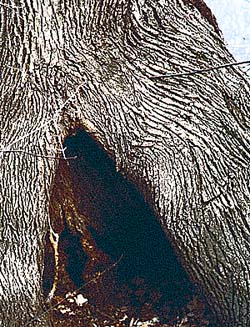
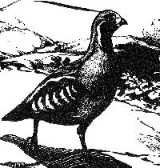
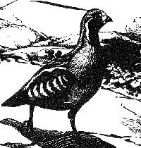

Probably because my sleep was interrupted by the the vice grip of my former consort Al DeSalvo, AKA Aspen Collar, and I was spending more time than usual awake in a silent house, I realized a few months ago that there was a pretty continuous pure tone mid frequency morse-code like tinnitus in my right ear. Very faint, probably nothing, but nonetheless present.
I decided to check it out.
So I arranged an ENT consultation. As I sat in the waiting room of the surgical specialties department of my health center, I noticed that across the hall, near the lab and pharmacy, there was a large posterboard sign depicting a lovely woman's face. It was advertising cosmetic surgery. It creeped me out.
After filling out a history questionnaire, I followed the nurse into the exam room. I noticed a business card tacked to the wall. The otolaryngologist I was about to see had a subspecialty in "facial plastic surgery." I was feeling more wrinkled and wattled by the minute. Was that my tinnitus, or was the word BOTOX issuing subliminally from the heating vents ?
Before long a pleasant young man breezed in, and introduced himself. The doctor. Everything about his body language said: hurry.
I began telling him what I thought he should know. The narrative. My story. He began to peer into my nose and ears even before I'd finished.
There were three or four things that HE wanted to know. Which ear. Was the hearing affected. Were there attendant neurological symptoms. Was I over-using caffeine or aspirin.
He seemed indifferent to the episodes of vertigo, deafness and tinnitus I'd had in 1985, the recurrance I'd had in 1992 which had prompted vestibular and audiometric tests and an MRI, and the C2 fracture I'd had three months prior.
He wanted to cut to the chase.
As a physician I knew that his questions were the important questions. The questions that would direct the work-up and lead to the diagnosis, or at least exclude the bad things that make ears ring. But as a patient I wanted to say, "Hey, buddy, shut up for a minute and let me tell my story my way."
I don't think he knew that his patient was herself a doctor.
"Drink less caffeine, schedule a hearing test and see me after that," he concluded cheerfully, and breezed out.
A large part of what doctors do is listen to patients' stories. We say "What brings you here today," or "Tell me about your illness," and step back to listen. When the patient stops talking, we ask for elaboration. "Tell me more about X." And when all the narrative details have been filled in, we ask the additional specific questions we need to ask. And conclude: "Is there anything else you feel is important for me to know ?"
Patients shape and color their stories like artists. Some open with a detailed background, like a novel's opening family history. Others go by strict chronology. How the symptom began. How it evolved. Others plunge in media res: this pain, right there, right now. Some emphasize character, reaction: I am so afraid. I have been so tired, angry, frustrated. Some narratives are fragmented, replete with non sequiturs, nearly avant garde. Others overflow with detail. Oatmeal for breakfast. What the mailman left. The dirty drapes. Some patients supply their own diagnoses. Some are showmen, comedians, actors with a well-rehearsed script. Others begrudge giving the least detail, just want a prescription to make it better. Others are simply inarticulate. The doctor faces a hermeneutic challenge. We must elicit, then interpret the words, and the gestures. And the silences.
Doctor: Have you had any chest pains ?
Patient: (long pause. looks away.) Not really.
That's when one begins, mentally, arranging a bed in the CCU.
The very act of telling one's story is therapeutic. As in catharsis. Confession. It is good to be heard. To unburden. To let it all out. To be heard, understood, accepted, validated. Connection is encouraging, energizing. We feel better afterwards. We are our bodies and our stories. We, like writers, appreciate being read with care and attention. To have our narratives admired and praised.
I did not like having the story of my tinnitus so ruthlessly edited.
I wanted to begin with the loud roaring, hissing typhoons of tinnitus I had in 1985 and go on to describe its subtle and ghostly return seven years later; I wanted to allude to the odd little munching sound I heard for a few weeks last summer and end with the tiny da dah da dahhh da da I hear now fluting in my ear when the room is silent. I tried to give him lush, descriptive prose.
He wanted dry, minimalist reportage.
Saturday, January 31, 2004
Spillway

Off the south bank of the Charles River at the small dam just east of the footbridge there is an astonishing cleft in the water. It seems a wonder and a paradox that onrushing fluid can present with something as apparantly static as a hole. It looks like someone has pickaxed a wedge right out of the water. It is the obverse of a standing wave. Stasis in motion.
But, after all, what is a river ?
From childhood, I've carried a sense that a river is, above all, treacherous: dark water, full of hidden perils, with powerful currents set to sweep a person away. Unfathomable, malign darkness and power. Something alive and dangerous.
One day I had a revelation. I think I was driving into Boston on one of the two parkways that parallel the Charles. The roads -- Memorial Drive and Storrow -- are busy, sinuous, congested, and, in spots, quite close to the river. Catastrophizers like myself can't help picturing our car wiping out on a curve and sailing into the river. Although I confess that in decades of living near Boston, I've never once heard of anyone doing so. (Storrow Drive is mostly notorious for truckers who ignore the posted height restrictions and get their rigs wedged under its low bridges.)
So one day I was driving and catastrophizing and suddenly I found myself mentally dissecting the river: I drained it. And realized that what was left was simply a ditch. Across which I could stroll. Ditch, water, motion. Somehow that act of reduction and abstraction diminished the river's menace.
I have no doubt that, under the upstream Charles River water's cleft, is a cloven stone.
Just as I have no doubt that the person who was led to the House of Toast today by a Yahoo search on "pictures+of+vaginas+from+girls+ages+11-16" was disappointed.
I would like to find a mental operation to diminish my distress at the thought of someone doing that search. To drain the notion of its onrushing, predatory sexual implication. To reduce it to dry ditch and flat fluid. But I can't. I can't conjure up a staid, disinterested anatomist as author of that search string. Someone wants to look. Maybe to have. Please, not that. I think of a camera's disinterested eye opening; of the prurient gaze behind it. Of violation. Trespass. Force.
To what can I reduce this, then ?
Desire. Restless, fluid, meandering. Taking the form of its submerged topographies. Admixed with strange elements, it churns up into froth.
Desire and revulsion, two eddies, clockwise and counterclockwise.
Canoeing on the Saco River in Maine: two memories from my first marriage.
On the first trip, it is cold and damp. Overcast, with intermittant mist. The river is deep and fast. I am new to this, and afraid. We are navigating a narrow stretch of river where the banks' branches overhang. Fallen branches and stumps just below the dark surface reach up, scrape the boat, threaten to overturn it. I stare at the oncoming water, terrified. Hands, grabbing for me.
On the second trip, it is warm and bright. Summertime. The river is crowded with canoers. There is an atmosphere of celebration and happiness. The water is clear, the bottom is clean and sandy. In places it is so shallow the boat scrapes the bottom. Seven months pregnant, I step out of the canoe and splash in the warm, calm water. It ripples around my ankles.
How wholesome.
That day was the first time I ever had heartburn, from greasy chicken we devoured on the drive home. My copy of Adrienne Rich's Poems, Selected and New 1950-1974 is moldy and watermarked from the dip in the river it took that day. I take it out and I notice that, on its cover, there's a picture of green water falling over green rock. The cover is creased, the page edges curl.
Does everyone have secrets ? Secret wishes, secret appetites. Secret fantasies. Shameful secrets, kept contained between banks.
The river overflows its banks, sweeps the children away.
And who is that carefree mother-to-be splashing in the placid, August river ?
Sunday, January 25, 2004

The Perks of Practice
It's 6 o'clock, Thursday, and I'm sitting at my desk writing the last notes of the day, trying to remember whose throat was mildly erythematous and whose left ear drum was injected and retracted. All the patients are gone. I too will soon be gone. My phone rings -- my private line, an outside call. I answer.
It is, as is often the case at this hour, DK. And, as is sometimes the case, he's playing a game: "The Wife, On Call."
Hellooooo. (A simpering voice.) This is Mr Jones ! I...I...have fractured my -- spleen !! Yes, my spleen. It is fractured, and my doctor gives me medication. But the medication has fallen right into the toilet ! And then my dog lapped it up, every last pill !
(I play along) And what medication is this, sir ?
Only one medication works for my pain -- it's called parca-, no, porco- , uh, no, perky- ....
Percodan ?
Yes, yes ! That is it ! My doctor ususally gives me 4,000 tablets and eight refills !
Hearing "fractured spleen" come out of my absolutely non-medical spouse's mouth amuses me no end. The problem of patients exhibiting possible "drug-seeking behavior" in my walk-in practice is not at all amusing.
I don't know what's more disturbing, am obviously disingenous attempt to "remember" the word "percocet," or a nickname basis familiarity with common narcotics -- perks, vikes, oxys, T-3's.
I remember a case from my first internship, circa 1978 -- a group of adolescents had broken into a pharmacy owned by one of their fathers and taken large numbers of "Percogesic" -- do they still make the stuff ? -- an over the counter combination of tylenol and and antihistamine, whose perc- containing brand name clearly capitalized on the "percodan" mystique.
And here I am, 25 years later, still cringing at that perky little syllable.
It is, as is often the case at this hour, DK. And, as is sometimes the case, he's playing a game: "The Wife, On Call."
Hellooooo. (A simpering voice.) This is Mr Jones ! I...I...have fractured my -- spleen !! Yes, my spleen. It is fractured, and my doctor gives me medication. But the medication has fallen right into the toilet ! And then my dog lapped it up, every last pill !
(I play along) And what medication is this, sir ?
Only one medication works for my pain -- it's called parca-, no, porco- , uh, no, perky- ....
Percodan ?
Yes, yes ! That is it ! My doctor ususally gives me 4,000 tablets and eight refills !
Hearing "fractured spleen" come out of my absolutely non-medical spouse's mouth amuses me no end. The problem of patients exhibiting possible "drug-seeking behavior" in my walk-in practice is not at all amusing.
I don't know what's more disturbing, am obviously disingenous attempt to "remember" the word "percocet," or a nickname basis familiarity with common narcotics -- perks, vikes, oxys, T-3's.
I remember a case from my first internship, circa 1978 -- a group of adolescents had broken into a pharmacy owned by one of their fathers and taken large numbers of "Percogesic" -- do they still make the stuff ? -- an over the counter combination of tylenol and and antihistamine, whose perc- containing brand name clearly capitalized on the "percodan" mystique.
And here I am, 25 years later, still cringing at that perky little syllable.
Saturday, January 24, 2004
The Unchurched State
While here in the USA forces are mustering to infuse secular life with sectarian theology, in France a bizarrely complementary attempt at forced secularization is underway.
I'm referring to their proposed prohibition in public schools of Muslim headscarves, "large" crosses, yarmulkes, "religious" beards (as opposed to secular ones) and other visible, outward signs of religious affiliation. Sikhs will be allowed to wear "clear showercaps" in lieu of turbans.
This is a dangerous intrusion of the state into private religious observance and expression, more apt to impact on people that have historically suffered discrimination -- Jews and Muslims -- than on mainstream Christians who typically do not wear particular garments as part of their faith.
What, then, one must ask, is a "large" cross ?
Take a beard: if it is a religious signifier, it must be shaved. If it is simply a fashion statement, it can remain. Same beard, different "meaning."
How will they determine what a beard "means" ?
And if these "visible signs" are banned in schools, where will they be banned next ? And after the signs are banned, will what they signify -- one worries particularly about Judaism and Islam -- also be banned ?
This is not just an extension of our own valuable division of church and state, which prohibits state imposition of a particular religion on its citizens while it allows them free, private expression of any faith they choose. It is an intrusion of the secular state into the most private of spheres -- the body itself and the significant and expressive articles that adorn it.
I fear this lofty concept of "secularization" is a cover for ugly religious bigotry, and that Muslims and Jews are the intended targets.
France deserves all the ridicule and vilification it's getting over this.
I'm referring to their proposed prohibition in public schools of Muslim headscarves, "large" crosses, yarmulkes, "religious" beards (as opposed to secular ones) and other visible, outward signs of religious affiliation. Sikhs will be allowed to wear "clear showercaps" in lieu of turbans.
This is a dangerous intrusion of the state into private religious observance and expression, more apt to impact on people that have historically suffered discrimination -- Jews and Muslims -- than on mainstream Christians who typically do not wear particular garments as part of their faith.
What, then, one must ask, is a "large" cross ?
Take a beard: if it is a religious signifier, it must be shaved. If it is simply a fashion statement, it can remain. Same beard, different "meaning."
How will they determine what a beard "means" ?
And if these "visible signs" are banned in schools, where will they be banned next ? And after the signs are banned, will what they signify -- one worries particularly about Judaism and Islam -- also be banned ?
This is not just an extension of our own valuable division of church and state, which prohibits state imposition of a particular religion on its citizens while it allows them free, private expression of any faith they choose. It is an intrusion of the secular state into the most private of spheres -- the body itself and the significant and expressive articles that adorn it.
I fear this lofty concept of "secularization" is a cover for ugly religious bigotry, and that Muslims and Jews are the intended targets.
France deserves all the ridicule and vilification it's getting over this.
The Unstated Church
Romney seeks a bill to ban gay marriage
"The legislation is designed to offer SJC justices a clear, "rational basis" for establishing heterosexual marriage."
When playing the "sacrament" card fails on the church-state division issue, they play the (so-called) "reason" card. They're not very good at it.
They propose to codify in statute a definition that will provide the Massachusetts Supreme Court with a justification to prohibit same sex couples to wed. This, after the Court's decision painstakingly demolished every "rational" argument against same sex unions and issued a clear and courageous mandate to allow them to proceed.
And what is this proposed "rational basis" that the Mitthead and His Theopublicans seek to codify ? That
"...marriage (is) a heterosexual institution based on child-raising and procreation..."
When DK and I wed in 1987, we had absolutely, as in absolute zero, no intention of procreating. We happen to be of discordant genders, theoretically able (at least back then) to make babies.
Where does this definition leave those of us who are married but are unwilling or unable to procreate ? Where does that place our marriages within this so-called institution of "heterosexual...childraising....(and) procreation ?" If this is a trinity of attributes of marriage, DK and I currently embody a mere paltry one. Many same sex couples are way ahead of us on the procreating and childraising angle.
But the reigning word here, of course, is "heterosexual." Mitt's not saying that "marriage is an institution based on procreation and childrearing." That would, needless to say, include lesbian and gay couples with children. His "rational basis" boils down to "marriage is a heterosexual institution."
In other words, "That's the way it's been. That's the way it must remain."
Sounds a lot like what pro-slavery folks must have been saying back in the day. I bet they even dipped into some of the writings of Saint Paul and used them to support the "institution" of slavery.
Yesterday the Globe ran a full page advertisement by a local "family values" outfit, Coalition for Marriage. The text was wrapped around a soft focus photo of two adorable tykes, a boy and a girl, wonder-bread white, the lad be-freckled in a 1950's Dick-and-Jane parody of cute. They're posed in what seemed to me in my pre-coffee fog to be a startlingly erotic and incestuous appearing cuddle. (DK had already adorned them with horns, pitchforks and pointy tails, making the overall impression even more bizarre.)
The argument -- the breathtakingly specious argument -- put forth in this advertisement is as follows (italics theirs):
"While the research comparing children in homosexual homes with those in heterosexual homes is inconclusive, here is what we do know. Reasearch in the past forty years repeatedly and clearly shows that when children are raised apart from their two, married biological parents, they suffer in everyimportant measure of well-being. Every child living in a same-sex home is, by definition, living apart from a complete set of biological parents."
They go on to list a host of dire consequences -- criminal behavior, low self-esteem, low school performance, physical abuse, sexual experimentation, poor emotional health, lack of compassion, poor physical health, lack of respect for women -- that children who do not live with "a complete set of biological parents" suffer.
To support their thesis they quote studies that looked at children of single-parent situations. Including, presumably, single-parent situations that arose because of domestic abuse, death, poverty. All of which are influences more noxious than a simple, theoretical lack "of a complete set of biological parents."
And, needless to say, none of the studies even remotely apply to a childrearing two-parent gay or lesbian partnership.
In fact, they are using studies that claim to show "broken marriages" hurt children to argue against marriage ! Isn't the more logical conclusion that as many people as possible should marry and stay married ?
A more "rational" piece of legislation for them to be shilling, given these studies, would be a law against divorce.
Jesus went on record against divorce. He never once mentioned homosexuality. Catholics consider divorce and remarriage a sacrament-level sin, not atoneable by ordinary measures; only anullment will allow such sinners to return to the Catholic communion table. And yet the Massachusetts Catholic establishment is not lobbying to codify this huge bit of theology into our State Constitution as a prohibition against divorce. On the other hand they are taking extraordinary measures to lobby -- on the basis of Catholic theology -- for codified prohibitions in secular law against same-sex marriage. They don't dare do the same with divorce. It touches the lives of too many non Catholic heterosexuals who don't want Catholic theology forced upon them. They're banking on a more universal anti-gay bigotry to get their anti-same-sex-marriage theology into secular law. The Vatican's language against homosexual parents -- that they "do violence" to their children -- is heartbreaking, antediluvian and cruel.
The Coalition for Marriage's whole case is an argument by italics or what my junior high civics teacher used to call a "handwaving argument."
It's also an argument that hinges on comparing apples with nanny-goats. Or submarines. They have no data to support their claims, so they import data from non-applicable studies.
Their intellectual dishonesty is simply astounding. Or maybe it's just stupidity. Quite possibly it's both.
It's like rendering a carcass: reason boils down to unstated theology which boils down to something even more unspoken. And ugly.
"The legislation is designed to offer SJC justices a clear, "rational basis" for establishing heterosexual marriage."
When playing the "sacrament" card fails on the church-state division issue, they play the (so-called) "reason" card. They're not very good at it.
They propose to codify in statute a definition that will provide the Massachusetts Supreme Court with a justification to prohibit same sex couples to wed. This, after the Court's decision painstakingly demolished every "rational" argument against same sex unions and issued a clear and courageous mandate to allow them to proceed.
And what is this proposed "rational basis" that the Mitthead and His Theopublicans seek to codify ? That
"...marriage (is) a heterosexual institution based on child-raising and procreation..."
When DK and I wed in 1987, we had absolutely, as in absolute zero, no intention of procreating. We happen to be of discordant genders, theoretically able (at least back then) to make babies.
Where does this definition leave those of us who are married but are unwilling or unable to procreate ? Where does that place our marriages within this so-called institution of "heterosexual...childraising....(and) procreation ?" If this is a trinity of attributes of marriage, DK and I currently embody a mere paltry one. Many same sex couples are way ahead of us on the procreating and childraising angle.
But the reigning word here, of course, is "heterosexual." Mitt's not saying that "marriage is an institution based on procreation and childrearing." That would, needless to say, include lesbian and gay couples with children. His "rational basis" boils down to "marriage is a heterosexual institution."
In other words, "That's the way it's been. That's the way it must remain."
Sounds a lot like what pro-slavery folks must have been saying back in the day. I bet they even dipped into some of the writings of Saint Paul and used them to support the "institution" of slavery.
Yesterday the Globe ran a full page advertisement by a local "family values" outfit, Coalition for Marriage. The text was wrapped around a soft focus photo of two adorable tykes, a boy and a girl, wonder-bread white, the lad be-freckled in a 1950's Dick-and-Jane parody of cute. They're posed in what seemed to me in my pre-coffee fog to be a startlingly erotic and incestuous appearing cuddle. (DK had already adorned them with horns, pitchforks and pointy tails, making the overall impression even more bizarre.)
The argument -- the breathtakingly specious argument -- put forth in this advertisement is as follows (italics theirs):
"While the research comparing children in homosexual homes with those in heterosexual homes is inconclusive, here is what we do know. Reasearch in the past forty years repeatedly and clearly shows that when children are raised apart from their two, married biological parents, they suffer in everyimportant measure of well-being. Every child living in a same-sex home is, by definition, living apart from a complete set of biological parents."
They go on to list a host of dire consequences -- criminal behavior, low self-esteem, low school performance, physical abuse, sexual experimentation, poor emotional health, lack of compassion, poor physical health, lack of respect for women -- that children who do not live with "a complete set of biological parents" suffer.
To support their thesis they quote studies that looked at children of single-parent situations. Including, presumably, single-parent situations that arose because of domestic abuse, death, poverty. All of which are influences more noxious than a simple, theoretical lack "of a complete set of biological parents."
And, needless to say, none of the studies even remotely apply to a childrearing two-parent gay or lesbian partnership.
In fact, they are using studies that claim to show "broken marriages" hurt children to argue against marriage ! Isn't the more logical conclusion that as many people as possible should marry and stay married ?
A more "rational" piece of legislation for them to be shilling, given these studies, would be a law against divorce.
Jesus went on record against divorce. He never once mentioned homosexuality. Catholics consider divorce and remarriage a sacrament-level sin, not atoneable by ordinary measures; only anullment will allow such sinners to return to the Catholic communion table. And yet the Massachusetts Catholic establishment is not lobbying to codify this huge bit of theology into our State Constitution as a prohibition against divorce. On the other hand they are taking extraordinary measures to lobby -- on the basis of Catholic theology -- for codified prohibitions in secular law against same-sex marriage. They don't dare do the same with divorce. It touches the lives of too many non Catholic heterosexuals who don't want Catholic theology forced upon them. They're banking on a more universal anti-gay bigotry to get their anti-same-sex-marriage theology into secular law. The Vatican's language against homosexual parents -- that they "do violence" to their children -- is heartbreaking, antediluvian and cruel.
The Coalition for Marriage's whole case is an argument by italics or what my junior high civics teacher used to call a "handwaving argument."
It's also an argument that hinges on comparing apples with nanny-goats. Or submarines. They have no data to support their claims, so they import data from non-applicable studies.
Their intellectual dishonesty is simply astounding. Or maybe it's just stupidity. Quite possibly it's both.
It's like rendering a carcass: reason boils down to unstated theology which boils down to something even more unspoken. And ugly.
Wednesday, January 21, 2004
Lost Weekend
The last time I worked before my accident was on a Friday in late September.
When I returned to work this week, I found that, for two days, whenever I went to scrawl the date on prescriptions and notes, my hand wanted to write "9" instead of "1" .
There must be a separate little rat brain that runs my medical life that switched off on 9/27 and only rebooted today. Or that went to sleep and woke disoriented.
So, let's see, shall I do some MEDBLOGGING ? Why not !
I looked in an ear today. I love looking in ears. I look in everyone's ears, practically, unless their presenting complaint is so un-otologic that peering in their ear would seem insane and cause them to flee the exam room in fear for their safety.
The eardrum -- the tympanic membrane -- is beautiful. Pearly gray, shiny, round, a little bone called the malleus visible in the middle. It sits right there at the end of the ear canal, as plain as day. Drum and hammer. A nifty little thing. I never get tired of looking at it.
Today a patient came in with an earache. Guy about my age. Fairly healthy. Not a terrible earache. But enough to come to the doctor.
I looked in his ear. 2/3 of the way in, and blocking my view of the eardrum, was a bright white glistening discrete clump of STUFF, beautifully speckled with tiny discrete brown spots. Like this:

It reminded me of nesselrode pie: white frosting and tiny brown flecks of chocolate.
Nesselrode pie !
When I was small, my Aunt Sofie and Uncle Peter took me to New York City. It was wonderful and exciting. New York ! My Aunt, for her broad experience of the Big(ger than Boston) City, seemed glamorous and sophisticated, and my uncle a brilliant and dapper man of the world. Part of their usual New York itinerary was to eat a confection known as Nesselrode Pie at a famous cake shop. This was a grown up confection: I believe I was allowed to look, and perhaps taste, but probably was given a more mundane sweet.
Which made it seem all the more glamorous.
I've never encountered Nesselrode Pie anywhere else.
Until today. When I discovered and named a new otologic sign: the Nesselrode Pie sign.
(Of course I had no idea what I was seeing. I guess a signifier does need a signified. I thought it might be fungus. I talked to the ENT doc. I did NOT mention nesselrode pie. I've got enough of an oddball reputation as it is. He wasn't sure either. We settled on some eardrops and a follow up consultation.)
There is a venerable medical tradition of naming medical phenomena after food. Miliary TB is a diffuse tuberculous infection that, on xray, appears as tiny white dots stippling the dark lung fields. Dots like "millet" seeds. Strawberry tongue in scarlet fever. Currant jelly sputum in Klebsiella pneumonia, and currant jelly stool with intestinal intususseption. Rice water stool in cholera. Peau d'orange (orange peel) changes of skin overlying breast tumors. The classic "spaghetti-and-meatballs" description of the microscopic appearance of malesezzia furfur, a skin fungus. "Fish flesh" tumors. Sausage fingers. Cauliflower ear.
And there is a related tradition of sizing lumps and bumps and nodules with food analogues: pea, walnut, plum, lemon, orange, grapefruit, cantaloupe, watermelon.
In naming our pathologies, we acknowledge that the body is food.
As we eat, so shall we be eaten.
When I returned to work this week, I found that, for two days, whenever I went to scrawl the date on prescriptions and notes, my hand wanted to write "9" instead of "1" .
There must be a separate little rat brain that runs my medical life that switched off on 9/27 and only rebooted today. Or that went to sleep and woke disoriented.
So, let's see, shall I do some MEDBLOGGING ? Why not !
I looked in an ear today. I love looking in ears. I look in everyone's ears, practically, unless their presenting complaint is so un-otologic that peering in their ear would seem insane and cause them to flee the exam room in fear for their safety.
The eardrum -- the tympanic membrane -- is beautiful. Pearly gray, shiny, round, a little bone called the malleus visible in the middle. It sits right there at the end of the ear canal, as plain as day. Drum and hammer. A nifty little thing. I never get tired of looking at it.
Today a patient came in with an earache. Guy about my age. Fairly healthy. Not a terrible earache. But enough to come to the doctor.
I looked in his ear. 2/3 of the way in, and blocking my view of the eardrum, was a bright white glistening discrete clump of STUFF, beautifully speckled with tiny discrete brown spots. Like this:
It reminded me of nesselrode pie: white frosting and tiny brown flecks of chocolate.
Nesselrode pie !
When I was small, my Aunt Sofie and Uncle Peter took me to New York City. It was wonderful and exciting. New York ! My Aunt, for her broad experience of the Big(ger than Boston) City, seemed glamorous and sophisticated, and my uncle a brilliant and dapper man of the world. Part of their usual New York itinerary was to eat a confection known as Nesselrode Pie at a famous cake shop. This was a grown up confection: I believe I was allowed to look, and perhaps taste, but probably was given a more mundane sweet.
Which made it seem all the more glamorous.
I've never encountered Nesselrode Pie anywhere else.
Until today. When I discovered and named a new otologic sign: the Nesselrode Pie sign.
(Of course I had no idea what I was seeing. I guess a signifier does need a signified. I thought it might be fungus. I talked to the ENT doc. I did NOT mention nesselrode pie. I've got enough of an oddball reputation as it is. He wasn't sure either. We settled on some eardrops and a follow up consultation.)
There is a venerable medical tradition of naming medical phenomena after food. Miliary TB is a diffuse tuberculous infection that, on xray, appears as tiny white dots stippling the dark lung fields. Dots like "millet" seeds. Strawberry tongue in scarlet fever. Currant jelly sputum in Klebsiella pneumonia, and currant jelly stool with intestinal intususseption. Rice water stool in cholera. Peau d'orange (orange peel) changes of skin overlying breast tumors. The classic "spaghetti-and-meatballs" description of the microscopic appearance of malesezzia furfur, a skin fungus. "Fish flesh" tumors. Sausage fingers. Cauliflower ear.
And there is a related tradition of sizing lumps and bumps and nodules with food analogues: pea, walnut, plum, lemon, orange, grapefruit, cantaloupe, watermelon.
In naming our pathologies, we acknowledge that the body is food.
As we eat, so shall we be eaten.
Tuesday, January 20, 2004
Sestina Time

Otto Modersohn, Worpswede, 1903
Her colors are wonderful -- but the form ?
The expression ! Hands like spoons,
noses like cobs, mouths like wounds,
faces like cretins. She overloads things. Two heads,
four hands crammed into the smallest space.
And children, at that. It is difficult to advise her.
I’d hoped the months in Paris would cure her
of discontent, and reform
the less-than-intimate spaces
that riddle our marriage. I’d substitute teaspoons
for brushes if that would turn her head
away from the canvas for a moment and toward my wounds.
Your work lacks study, nature. That wounded
me, spoiled the rapture of her
return. Each morning she heads
straight for her atelier, now. Problems of form
pull her from the unwashed plates and spoons
that clutter the table, haphazarding white space
with jam and stain. What about the space
we inhabit, Dear ? My wounds
open like mouths, but your spoons
just brush their lips. What she saw in Paris changed her.
Nights, in bed, she raves how nature’s forms
slide into and over each other. I clutch my poor head
and roll away. Cold marmoreal heads
of ancient sculpture, the space
in Hayashi woodblocks, forms
and rough intricacies seduced her from the wounds
that gape on the pillow beside hers.
Travailler, toujours travailler. That wretched Rodin spooned
her with the same honey which he spooned
into Clara Westhoff’s head.
My malweiber, paintwife. Her
Berlin cooking lessons, all dithered into space.
She who was my balm now is my wound.
Winter approaches. Outside, the dim Worpswede light deforms,
to shadows spooned on mud, overthronged space:
birches, seedheads, black canals like wounds
she’s gouged in her marriage, faithful just to form.
3.13.99
I have a poster of Paula Modersohn-Becker's Self Portrait with Amber Necklace on the wall of my office. I've had this poster for decades, and can't remember where I got it, or when I discovered her paintings.
She was close friends with Rilke, and Rilke's wife Clara Westhoff, also a painter.
Her paintings are beautiful.
The first stanza of the sestina is cribbed from her husband's journal. He was chagrined at how painting distracted her from the marriage. He was also an artist, but must more conservative than his wife.
She died young shortly after childbirth, probably of a pulmonary embolus. Rilke's "Requiem For A friend" is for her.
Monday, January 19, 2004
In Which I Finally Replace The Deposed Albert With Mr. Toad
So today I resume the part of my life that was derailed on 9.27.
How odd it seems. I am no longer, what was the Larkin line, a "...wax-fleshed outpatient/still vague from accidents..." taking the sun in the park, awol from "the toad work."
It seems out of character to arise and -- exercise. As in physical therapy. I am a sloth's sloth. Physiculture is and always has been my anathema. But change we must and do. ("We must, we must, we must increase our bust" is a silly refrain that occurs to me when I do the stretch-the-red-band across the chest exercise.) I sort of like the exercises. Except for the fiendish little number called "wall angels." Don't even ask. I have a new (and probably permanent) little grinding sound when I turn my head right -- like pulmonary rales, a little kkcchhht. Trivial. A memento. For those days to come when my excellent therapist says "you won't even think about your neck."
So its back on the train, or on the tracks. Or the toad.
How odd it seems. I am no longer, what was the Larkin line, a "...wax-fleshed outpatient/still vague from accidents..." taking the sun in the park, awol from "the toad work."
It seems out of character to arise and -- exercise. As in physical therapy. I am a sloth's sloth. Physiculture is and always has been my anathema. But change we must and do. ("We must, we must, we must increase our bust" is a silly refrain that occurs to me when I do the stretch-the-red-band across the chest exercise.) I sort of like the exercises. Except for the fiendish little number called "wall angels." Don't even ask. I have a new (and probably permanent) little grinding sound when I turn my head right -- like pulmonary rales, a little kkcchhht. Trivial. A memento. For those days to come when my excellent therapist says "you won't even think about your neck."
So its back on the train, or on the tracks. Or the toad.
Sunday, January 18, 2004
On Un
Dale at Vajrayana Practice offered some thoughts on the word "unchurched" recently, and got me thinking about belonging.
He discussed the challenges and comfort that being "churched" -- or sangha'ed -- can provide. In Buddhism, one takes refuge in three things: the Buddha, the Dharma and the Sangha. The sangha is the collective of Buddhist practitioners, either a specific group, or the wider universe of adherents. "Taking refuge" is a beautiful phrase: it implies shelter and support. It resonates with the biblical "under the refuge of your wings." Buddhism, then, holds the importance of the collective up to the importance of the Buddha himself, and the Dharma or the teachings.
I've been gnawing at the whole "church" thing for awhile. My tradition -- Congregationalist -- is definately into churchgoing. Church suppers. Church bake sales. Coffees. Fellowship.
Catholics claim the term "church" even further, referring to their church as The Church. Christian Scientists have a "Mother Church" -- I'm not quite clear whether this is a concept or a physical edifice, but the connotation of nurture and generation is there.
I remember maybe 20 years ago, during my first marriage, I ventured out one Sunday to church. I picked, probably at random, a nearby Trinitarian Congregationalist Church, not remembering that my natal denomination had transmogrified into the "United Church Of Christ," a dismally corporate sounding name if you ask me. I remember little of the service, except that it was welcoming to the point of being intrusively evangelical and it scared me off. I suspect I'd wanted to simply sit, invisible, in the back pew.
So, other than a couple of funeral masses and a mass at Glastonbury Abbey last spring where I attended a Merton seminar, I've been, from a Christian point of view, unchurched.
I've sat sporadically with various local Buddhist groups over the past 20 years -- but never joined a sangha. I sat for a couple of years on my own, floundered, and stopped daily practice many months ago. (My zabuton's doing interim duty these days as a physical therapy mat and a bed for kitties.)
I'm -- have I mentioned ? -- not very social.
I guess if there has been a theme of the past year, it's been to wonder whether my own tradition could offer what I have found so appealing in Buddhism. Merton seems to suggest that it does. But garden variety Christianity doesn't speak to the question of Being as directly as Buddhism. It's great on doing -- admirable and wonderful, in fact. But one has to seek out odd streams of mysticism to get anything ontological, and, I may be wrong about this, that's just not the focus of the United Church Of Christ.
Ordinary humanist ethics gets at the doing part pretty well. It's the being part, the Mystery of it all, that I would hope "church" could teach. The Word "Christ" to me seems a way of speaking about having a "self" and a "body" that participates in Godhead; this is probably heresy in every Christian church. It could be a shorthand, then, for "form is emptiness, emptiness is form." That's definately heresy.
Plus, in the eyes of The Church (that's The with a capital T) I am an adulteress. (Divorced, remarried.) Big time sinner, me. Hellbent.
I couldn't, with any sort of good faith, recite the Apostle's Creed.
But I felt no such dissonance chanting the Heart Sutra and Hakuin's Song of Zazen the few times I sat with a local Zen group.
I have suffered, from time to time, from church envy.
But, deep down, I suspect that it is my fate to remain unchurched.
A spiritual derelict, refusing against all advice and counsel, to come in from the cold.
He discussed the challenges and comfort that being "churched" -- or sangha'ed -- can provide. In Buddhism, one takes refuge in three things: the Buddha, the Dharma and the Sangha. The sangha is the collective of Buddhist practitioners, either a specific group, or the wider universe of adherents. "Taking refuge" is a beautiful phrase: it implies shelter and support. It resonates with the biblical "under the refuge of your wings." Buddhism, then, holds the importance of the collective up to the importance of the Buddha himself, and the Dharma or the teachings.
I've been gnawing at the whole "church" thing for awhile. My tradition -- Congregationalist -- is definately into churchgoing. Church suppers. Church bake sales. Coffees. Fellowship.
Catholics claim the term "church" even further, referring to their church as The Church. Christian Scientists have a "Mother Church" -- I'm not quite clear whether this is a concept or a physical edifice, but the connotation of nurture and generation is there.
I remember maybe 20 years ago, during my first marriage, I ventured out one Sunday to church. I picked, probably at random, a nearby Trinitarian Congregationalist Church, not remembering that my natal denomination had transmogrified into the "United Church Of Christ," a dismally corporate sounding name if you ask me. I remember little of the service, except that it was welcoming to the point of being intrusively evangelical and it scared me off. I suspect I'd wanted to simply sit, invisible, in the back pew.
So, other than a couple of funeral masses and a mass at Glastonbury Abbey last spring where I attended a Merton seminar, I've been, from a Christian point of view, unchurched.
I've sat sporadically with various local Buddhist groups over the past 20 years -- but never joined a sangha. I sat for a couple of years on my own, floundered, and stopped daily practice many months ago. (My zabuton's doing interim duty these days as a physical therapy mat and a bed for kitties.)
I'm -- have I mentioned ? -- not very social.
I guess if there has been a theme of the past year, it's been to wonder whether my own tradition could offer what I have found so appealing in Buddhism. Merton seems to suggest that it does. But garden variety Christianity doesn't speak to the question of Being as directly as Buddhism. It's great on doing -- admirable and wonderful, in fact. But one has to seek out odd streams of mysticism to get anything ontological, and, I may be wrong about this, that's just not the focus of the United Church Of Christ.
Ordinary humanist ethics gets at the doing part pretty well. It's the being part, the Mystery of it all, that I would hope "church" could teach. The Word "Christ" to me seems a way of speaking about having a "self" and a "body" that participates in Godhead; this is probably heresy in every Christian church. It could be a shorthand, then, for "form is emptiness, emptiness is form." That's definately heresy.
Plus, in the eyes of The Church (that's The with a capital T) I am an adulteress. (Divorced, remarried.) Big time sinner, me. Hellbent.
I couldn't, with any sort of good faith, recite the Apostle's Creed.
But I felt no such dissonance chanting the Heart Sutra and Hakuin's Song of Zazen the few times I sat with a local Zen group.
I have suffered, from time to time, from church envy.
But, deep down, I suspect that it is my fate to remain unchurched.
A spiritual derelict, refusing against all advice and counsel, to come in from the cold.
Saturday, January 17, 2004
Waystation

I like to imagine that this dark arch leads to a warm den. A hermit's cell. The cell where I've been these past three months. Cell, and hibernatorium. For I've spent a lot of time simply dormant, waiting, biding my time. Time's up, now. The chapter, "In Which I Break My Neck," is actually over. How strange. It was becoming familiar, comfortable terrain. I sit alone in a waystation/on a long railroad/waiting for a train -- when my dear father, Raul Stanati, returns from Florida I must ask him who wrote that song. The train, my life, has arrived and it's time to get back on.
That's a bad metaphor. This has never not been my life. What is, is. Beyond desire or rebellion.
A line from a Robert Lowell poem occurred to me, earlier today: "Cured, I am frizzled, stale and small." It's hardly an expansive, wild mania from which I am emerging, but the other adjectives felt applicable.
Frizzled, because it sounds like frazzled, and because I have been on a forced retreat from a job about which I have terrible ambivalence, and to which I must return in two days. Frazzled to be driving again: curiously, I find myself not so much anxious, but weirdly befogged and inattentive, absent minded, passive, only remembering at the last minute that traffic lights operationally apply to me. Stale, in that, especially lately, I've had little patience for reading, and no inclination whatsoever to sit or to write poetry. Small: diminished, a bit damaged, frailer, thinner. Creaky, rusted up.
I returned to the river path, today, for the first time in a few weeks. And for the first time since September without my fiendish, neck-encasing Albert DeSalvo neck brace. I went as an antidote to feeling frazzled, stale and small. I returned with a good measure of levity and vigor.
What a delight it was to turn my head and not my whole body when I look around.
It was icy on the path, and the vegetation was even more spare and stripped. I love the knots and tangles, the helices and spirals, the skeletal intricacy of it all. I brought the camera: there is so much to see. It helps me look. I no longer feel rapacious with it. The hermit's site is still vacant, the tent still collapsed. The suitcases have been rearranged, but not pillaged. The lawnchair is propped against a tree. I feel less shy and transgressive there, now. From a distance, hidden in brambles, I watched a jogger stop and stare at the ruined camp.


The beautiful, nameless grass is still standing; how can something so dessicated be so resilient and strong ?
The river was swift, and shelves of ice extended from the bank. Lumps of brown-tinged foam were caught on the ice at the banks, quivering. The coves were frozen over, and ducks and geese were walking on the ice, swimming and diving in the channel, and flying overhead. I took a photo of a skyful of geese, and, aiming, had a brief, disquieting sense of being a hunter.
Dearest, I cannot linger here
in lather like a polar bear.
-- R. Lowell, "Home After Three Months Away."
I like to imagine that this dark arch leads to a warm den. A hermit's cell. The cell where I've been these past three months. Cell, and hibernatorium. For I've spent a lot of time simply dormant, waiting, biding my time. Time's up, now. The chapter, "In Which I Break My Neck," is actually over. How strange. It was becoming familiar, comfortable terrain. I sit alone in a waystation/on a long railroad/waiting for a train -- when my dear father, Raul Stanati, returns from Florida I must ask him who wrote that song. The train, my life, has arrived and it's time to get back on.
That's a bad metaphor. This has never not been my life. What is, is. Beyond desire or rebellion.
A line from a Robert Lowell poem occurred to me, earlier today: "Cured, I am frizzled, stale and small." It's hardly an expansive, wild mania from which I am emerging, but the other adjectives felt applicable.
Frizzled, because it sounds like frazzled, and because I have been on a forced retreat from a job about which I have terrible ambivalence, and to which I must return in two days. Frazzled to be driving again: curiously, I find myself not so much anxious, but weirdly befogged and inattentive, absent minded, passive, only remembering at the last minute that traffic lights operationally apply to me. Stale, in that, especially lately, I've had little patience for reading, and no inclination whatsoever to sit or to write poetry. Small: diminished, a bit damaged, frailer, thinner. Creaky, rusted up.
I returned to the river path, today, for the first time in a few weeks. And for the first time since September without my fiendish, neck-encasing Albert DeSalvo neck brace. I went as an antidote to feeling frazzled, stale and small. I returned with a good measure of levity and vigor.
What a delight it was to turn my head and not my whole body when I look around.
It was icy on the path, and the vegetation was even more spare and stripped. I love the knots and tangles, the helices and spirals, the skeletal intricacy of it all. I brought the camera: there is so much to see. It helps me look. I no longer feel rapacious with it. The hermit's site is still vacant, the tent still collapsed. The suitcases have been rearranged, but not pillaged. The lawnchair is propped against a tree. I feel less shy and transgressive there, now. From a distance, hidden in brambles, I watched a jogger stop and stare at the ruined camp.
The beautiful, nameless grass is still standing; how can something so dessicated be so resilient and strong ?
The river was swift, and shelves of ice extended from the bank. Lumps of brown-tinged foam were caught on the ice at the banks, quivering. The coves were frozen over, and ducks and geese were walking on the ice, swimming and diving in the channel, and flying overhead. I took a photo of a skyful of geese, and, aiming, had a brief, disquieting sense of being a hunter.
Dearest, I cannot linger here
in lather like a polar bear.
-- R. Lowell, "Home After Three Months Away."
Friday, January 16, 2004
The Rich Get Richer, The Sick Get Sicker
Boston.com / News / Nation / Universal health care sought
A prestigious scientific committee of the National Academy of Science's Institute of Medicine, sponsored by the Robert Wood Johnson Foundation, has issued a scholarly report and clarion call for universal health coverage before 2010. It calls the current situation of the uninsured "dire."
Our Secretary of Health and Human Services -- the titular guardian of the nation's health and well-being -- weighed in on the report:
"The report, however, drew a cool response from the Bush administration, which has proposed new tax credits to help the uninsured buy coverage. Health and Human Services Secretary Tommy G. Thompson said the proposal was "not realistic." "
His response was, basically, "no can do."
Shouln't his response have been: we are going to do all we can do to make this happen ? He's the guy in charge, for God's sake. His apathy is appalling.
And what was the adminstration's response to the recent "health care disparites report " issued by its own department of health and human services ?
Shockingly, it was to revise the conclusion to soften and/or eliminate references to racial and socioeconomic disparites and to highlight small instances of "favorable" minority statistics:
"For example, it stated that American Indians/Alaska natives have a lower death rate from all cancers. But it neglects to mention that overall life expectancies for each group are significantly shorter than for other Americans, or that their infant mortality rates are much higher."
Revisionist history. Revisionist science. Revisionist statistics.
Meanwhile, our own homegrown Righty, the Mitthead, gave his "State of the State Address."
He proposes to give free state or community college education to high school students scoring in the top 25% of our state's high stakes, do-or-die, MCAS test, AKA the tunnel-vision focus of our state's Darwinian education policy (in addition to a new one-size-fits all, outsider-sponsored, voter-initiative-instituted "English Immersion" program for non-English speaking students.)
One might expect to find, among these high scorers, a goodly proportion of economically advantaged children who don't need state subsidy.
Boston.com / News / Local / Mass. / Tuition aid may be linked to MCAS: viz:
"Because of the way the proposal is structured, it could end up helping students who do not need financial assistance, critics point out. Romney aims to help 25 percent of all MCAS test takers across the board -- meaning that students in wealthier towns, which generally have higher test scores, would have a better shot at the money. Other states with similar programs have targeted a set percentage of test takers in each school, to be more equitable. 'What this will do, because of the well-known relationship between test scores and community wealth, is take state tax money and give it to the richest kids in the Commonwealth,' said Bob Schaeffer, public education director for Cambridge-based FairTest, which opposes MCAS. 'Test scores are not merit.'"
The rich, under the Mitthead, get richer.
The sick, under the Bushwhacker, get sicker.
A prestigious scientific committee of the National Academy of Science's Institute of Medicine, sponsored by the Robert Wood Johnson Foundation, has issued a scholarly report and clarion call for universal health coverage before 2010. It calls the current situation of the uninsured "dire."
Our Secretary of Health and Human Services -- the titular guardian of the nation's health and well-being -- weighed in on the report:
"The report, however, drew a cool response from the Bush administration, which has proposed new tax credits to help the uninsured buy coverage. Health and Human Services Secretary Tommy G. Thompson said the proposal was "not realistic." "
His response was, basically, "no can do."
Shouln't his response have been: we are going to do all we can do to make this happen ? He's the guy in charge, for God's sake. His apathy is appalling.
And what was the adminstration's response to the recent "health care disparites report " issued by its own department of health and human services ?
Shockingly, it was to revise the conclusion to soften and/or eliminate references to racial and socioeconomic disparites and to highlight small instances of "favorable" minority statistics:
"For example, it stated that American Indians/Alaska natives have a lower death rate from all cancers. But it neglects to mention that overall life expectancies for each group are significantly shorter than for other Americans, or that their infant mortality rates are much higher."
Revisionist history. Revisionist science. Revisionist statistics.
Meanwhile, our own homegrown Righty, the Mitthead, gave his "State of the State Address."
He proposes to give free state or community college education to high school students scoring in the top 25% of our state's high stakes, do-or-die, MCAS test, AKA the tunnel-vision focus of our state's Darwinian education policy (in addition to a new one-size-fits all, outsider-sponsored, voter-initiative-instituted "English Immersion" program for non-English speaking students.)
One might expect to find, among these high scorers, a goodly proportion of economically advantaged children who don't need state subsidy.
Boston.com / News / Local / Mass. / Tuition aid may be linked to MCAS: viz:
"Because of the way the proposal is structured, it could end up helping students who do not need financial assistance, critics point out. Romney aims to help 25 percent of all MCAS test takers across the board -- meaning that students in wealthier towns, which generally have higher test scores, would have a better shot at the money. Other states with similar programs have targeted a set percentage of test takers in each school, to be more equitable. 'What this will do, because of the well-known relationship between test scores and community wealth, is take state tax money and give it to the richest kids in the Commonwealth,' said Bob Schaeffer, public education director for Cambridge-based FairTest, which opposes MCAS. 'Test scores are not merit.'"
The rich, under the Mitthead, get richer.
The sick, under the Bushwhacker, get sicker.
Thursday, January 15, 2004
On Being Uncoiffed And Embodied In A Loud Cold World
As promised, it's cold. And getting colder and windier.
The Lad returned from snowboarding intact. The bunny survived my clueless husbandry.
And I survived the quarter mile trek from the Brigham to the doc's office, thanks to long underwear, double socks, a major hat and the famous red scarf. It was actually bracing. It felt good to be alive, walking in the sunlight; Brookline Ave parallels The Muddy River -- it and I go back a long way, 1985 to be precise, poetically -- little wisps of fog were rising from it, and a lone duck floated in a ring of concentric ripples.
My eyes were cold.
What was harder to survive were the hospital TVs. A blaring TV in the CAT scan waiting room. Another TV blaring in the ambulatory radiology waiting room. TVs set to morning talk programs. Peppy, chipper anchor people blabbing on and on. Yucking it up. Audiences laughing on cue. I was trying to read. I'm reading Susan Bordo's Unbearable Weight, a classic feminist text on women and food and bodies that I'd somehow overlooked; it's quite interesting and enagaging. But reading something that references Foucault with morning TV coming in my other channels just didn't work. I gave up.
What was coming in those other channels, appropriately enough, contained plenty of the usual TV references to diets and food and weight loss. As if to illustrate the book I was failing to read. Later, a woman somewhere behind me began talking. Just loud enough to intrude and be impossible to ignore. Her stream of speech was punctuated by briefer responses from a male voice. Again, the topic was weight gain and loss.
First, he lamented gaining weight after the age of forty. This elicited from her a much more elaborate narrative that began with an dramatic opening sentence that hinted at a much-told-tale: "The minute I hit puberty I gained 25 pounds. In one week." Over the decades there ensued, she said, multiple instances of major (60-100 pound) weight loss, regain, reloss, cycling with stress, surgeries, more stress. The gains were precipitated by the need for soothing "comfort food," the losses by the need "to like herself more." As she warmed to the subject, his answers became briefer, less interested.
Another living illustration of Bordo's text.
As is this ugly racist, homophobic, misogynistic assault on the marvelous and lovely Margaret Cho by a mewling gang of internet yahoos.
As is, in fact, Maureen Dowd's vapidly pre-feminist scolding of Howard Dean's doctor wife for not standing by her man, preferring to continue to take care of her family and patients, and also for, well, kinda sorta acting and dressing like me. ("In worn jeans and old sneakers, the shy and retiring Dr. Judith Steinberg Dean looked like a crunchy Vermont hippie, blithely uncoiffed, unadorned, unstyled...")
Have you ever noticed how the white noise of an xray processor can be quite beautiful ?
(Thanks to Atrios for the usual important news references.)
The Lad returned from snowboarding intact. The bunny survived my clueless husbandry.
And I survived the quarter mile trek from the Brigham to the doc's office, thanks to long underwear, double socks, a major hat and the famous red scarf. It was actually bracing. It felt good to be alive, walking in the sunlight; Brookline Ave parallels The Muddy River -- it and I go back a long way, 1985 to be precise, poetically -- little wisps of fog were rising from it, and a lone duck floated in a ring of concentric ripples.
My eyes were cold.
What was harder to survive were the hospital TVs. A blaring TV in the CAT scan waiting room. Another TV blaring in the ambulatory radiology waiting room. TVs set to morning talk programs. Peppy, chipper anchor people blabbing on and on. Yucking it up. Audiences laughing on cue. I was trying to read. I'm reading Susan Bordo's Unbearable Weight, a classic feminist text on women and food and bodies that I'd somehow overlooked; it's quite interesting and enagaging. But reading something that references Foucault with morning TV coming in my other channels just didn't work. I gave up.
What was coming in those other channels, appropriately enough, contained plenty of the usual TV references to diets and food and weight loss. As if to illustrate the book I was failing to read. Later, a woman somewhere behind me began talking. Just loud enough to intrude and be impossible to ignore. Her stream of speech was punctuated by briefer responses from a male voice. Again, the topic was weight gain and loss.
First, he lamented gaining weight after the age of forty. This elicited from her a much more elaborate narrative that began with an dramatic opening sentence that hinted at a much-told-tale: "The minute I hit puberty I gained 25 pounds. In one week." Over the decades there ensued, she said, multiple instances of major (60-100 pound) weight loss, regain, reloss, cycling with stress, surgeries, more stress. The gains were precipitated by the need for soothing "comfort food," the losses by the need "to like herself more." As she warmed to the subject, his answers became briefer, less interested.
Another living illustration of Bordo's text.
As is this ugly racist, homophobic, misogynistic assault on the marvelous and lovely Margaret Cho by a mewling gang of internet yahoos.
As is, in fact, Maureen Dowd's vapidly pre-feminist scolding of Howard Dean's doctor wife for not standing by her man, preferring to continue to take care of her family and patients, and also for, well, kinda sorta acting and dressing like me. ("In worn jeans and old sneakers, the shy and retiring Dr. Judith Steinberg Dean looked like a crunchy Vermont hippie, blithely uncoiffed, unadorned, unstyled...")
Have you ever noticed how the white noise of an xray processor can be quite beautiful ?
(Thanks to Atrios for the usual important news references.)
Wednesday, January 14, 2004
Narcissus and Blogdom

You may think this is a photo of me taking a picture of me in the bathroom mirror. But look again: could it be me taking a picture of you ?
Blogging and narcissism had been the topic of a recent trans-blog discussion of some thoughtfulness and erudition. I chanced upon it via a link in Br. Tom's this journal blug.
Reading blogs sometimes feels like seduction. I wander deeper and deeper, link by link. Maybe leaving a trail of digital breadcrumbs, maybe not. I succumb. Drawn by interest, curiosity, greed. Bright trinkets (or a glimpse of naked limb, or a glistening, ruby-fleshed pomegranite) beckon from the underbrush. I am the voyeur, the lurker. The shadow.
Can a voyeur claim to be seduced ? The seducer is unaware of the seduction. Oh, really ? There are little, imperfect bits of code that tell us who's watching. I am watching you watch me -- this is below the level of conversation, this is spying now -- and it feels corrupt, shameful, louche. I know that you know that I am watching you, following you. A contextual paraphilia. A game.
For me, blogging these past few months has been a, yes, narcissistic extension of my sunk-in-the-body, removed-from-the-world, self-absorbed convalescence. Do not mistake this for a "therapeutic" or "healing" enterprise. It's simply a response to a primitive bodily insult, a vulnerability. It's a description, a reaction, a display.
But I digress, in my usual moody manner. Mainly I want to note the thrill of reading so much thoughtful text and response. The writing, the commitment, the humor, the sheer generosity and grace is quite overwhelming. It's a privilege, for example, to be able to read Ron Silliman's ongoing and rigorous poetry and poetics blog, Henry Gould's more wry and affable but no less incisive HGPoetics, Meetingbrook's Christian/Zen meditations, to name just a few.
As "public" as this is, I've kept my blogs secret, anonymous. Even from DK. What would my Dad rthink if he encountered himself on the web as "Raul Stanati" ? I'm not particularly thoughtful or erudite, and, as I've boasted in the past, Robert Pinsky himself, circa 1973, labeled my prose style "turgid." Twenty five years of writing medical notes has not helped in the rhetorical elegance department. Case in point. Nonetheless, this is the ultimate democracy, and I'm glad to add my voice to the clamor.
And very grateful for all who have read and responded. So many beautiful voices !
On Display (1997)
My neighbor’s daughter pirouettes across
their luscious grass. Her pink regalia
is satin, Empire-waisted, decollete.
She figure-eights the ChemLawn warning signs
so brazenly I can imagine her
imagining Olympic judges’ gaze
transfixed by her perfect ten point oh.
Her prima ballerina arabesques
cue the curbside sprinkler corps aloft
into quicksilver jets and plis .
She cartwheels in a gossamer roulette,
a blur of curls and sawtooth diadem,
then waves her pinwheel scepter to decree
that frisbees stall midair. She thrills at thrall.
She is cadenza, obbligato, trill.
Her world rhymes and scans. When she grows up
she wants to own a horse, and be adored.
My prayer for this round child: may a cold eye
of clear dispassion startle her awake,
and not a raptor’s icy estimate,
invisible with altitude, acute,
or a chill malocchio, unsocketed,
polished on a sleeve, and offered as
a peppermint, a cat’s-eye, a pretty bead.
And may the kiss of that indifference
dispell the dream that suits her so perfectly
since all benevolence burns off by noon,
and by nightfall hula hoops are Catherine wheels.
When display becomes displeasure, discipline,
when adjectives bleed down her cheeks like kohl,
her streets will choke to alleys, her sidewalks fail
first to outskirts then to a nakedness
that scorns eros and thanatos alike.
Let this be where she stops and listens.
Let this be where she begins to speak.
Do It Wrong From The Gittgo
Boston.com / News / Local / Mass. / Concerns raised on examiner commission
So Governor Romney, AKA The Mitthead, with the usual vapid and self-congratulatory grandstanding, this week announced the appointment of a commission (Commission on Medicolegal Investigation) to recruit a new head of the state medical examiners office, an office lately under scrutiny for such "Hi I'm Dr Nick !"-like exploits as cremating misidentified corpses and losing body parts -- a pair of infants eyeballs, to be precise -- crucial to forensic investigations.
Turns out the State is under statutory mandate to have such a commission already up and running.
And that such a commission is legally mandated to include two board certified forensic pathologists.
Guess what. It doesn't. It's got a couple of regular board certified pathologists, but none with further training, expertise and certification in medicolegal pathology.
Oh, well, of course "...the governor's office had made a "good faith effort" to comply with the state statute for appointing the Commission on Medicolegal Investigation, which requires membership of two forensic pathologists certified by the American Board of Pathology..." according to Herbert P. Wilkins, a retired Supreme Judicial Court chief justice also on the commission.
Looks like a member of the press had actually done some homework, and asked the Gov. a pointed question:
"Are the forensic pathologists on this commission certified as required by statute?"
Never passing up an opportunity to cover up pathologic ignorance, display transparent disingenuousness and/or shift the blame and discomfort to others, our fearless leader turned to the just-sworn-in members onstage with him and asked:
"Are there any forensic scientists on this commission that are not board certified?" (Forensic scientists ? Does anyone remember what the meaning of is is ?)
And, as Mr Cox, my history 101 professor was fond of saying, "everyone stared fixedly at the floor."
So Mitt turned back to his adoring crowd, flashed his pearly whites and replied, "They are all certified."
One of the two pathologists later explained she thought he simply meant board certified in pathology. (A "forensic science.")
I would call this starting out on the wrong foot.
Where, as the ME's office might well ask, is the right foot ?
So Governor Romney, AKA The Mitthead, with the usual vapid and self-congratulatory grandstanding, this week announced the appointment of a commission (Commission on Medicolegal Investigation) to recruit a new head of the state medical examiners office, an office lately under scrutiny for such "Hi I'm Dr Nick !"-like exploits as cremating misidentified corpses and losing body parts -- a pair of infants eyeballs, to be precise -- crucial to forensic investigations.
Turns out the State is under statutory mandate to have such a commission already up and running.
And that such a commission is legally mandated to include two board certified forensic pathologists.
Guess what. It doesn't. It's got a couple of regular board certified pathologists, but none with further training, expertise and certification in medicolegal pathology.
Oh, well, of course "...the governor's office had made a "good faith effort" to comply with the state statute for appointing the Commission on Medicolegal Investigation, which requires membership of two forensic pathologists certified by the American Board of Pathology..." according to Herbert P. Wilkins, a retired Supreme Judicial Court chief justice also on the commission.
Looks like a member of the press had actually done some homework, and asked the Gov. a pointed question:
"Are the forensic pathologists on this commission certified as required by statute?"
Never passing up an opportunity to cover up pathologic ignorance, display transparent disingenuousness and/or shift the blame and discomfort to others, our fearless leader turned to the just-sworn-in members onstage with him and asked:
"Are there any forensic scientists on this commission that are not board certified?" (Forensic scientists ? Does anyone remember what the meaning of is is ?)
And, as Mr Cox, my history 101 professor was fond of saying, "everyone stared fixedly at the floor."
So Mitt turned back to his adoring crowd, flashed his pearly whites and replied, "They are all certified."
One of the two pathologists later explained she thought he simply meant board certified in pathology. (A "forensic science.")
I would call this starting out on the wrong foot.
Where, as the ME's office might well ask, is the right foot ?
Tuesday, January 13, 2004
Rabbit In The Attic
The Lad went off to Maine to go snow-boarding last night, giving me endless opportunities for maternal catastrophizing (mutilating traffic and snow board accidents, and countless variations on gangrenous frostbite and asystolic hypothermia.) He left me in charge of the Bunny.
There's a rabbit in the attic. That's where the Lad lives. He gave me instructions to supply it with bunny crunchies, water and hay. Lettuce. Apparantly it likes raisins. What else it likes is anybody's guess. I don't have a lot of experience with bunnies. I know what to expect from kitties. Even gerbils. But bunnies are ciphers.
The Lad's caring for the bunny for a friend who's gone off to a lagomorph-unfriendly school. There was a hamster, too. Was. RIP.
So the Lad bought a roll of green plastic-coated wire and actually fenced off a decent space for the creature and its hay, its cages and its other rabbity paraphenalia. An uncharacteristically 4-H kind of project for my Lad, sort of touching really. My son the farmer.
I went into the pen with the bunny, thinking it might want company. What do I know ? I tried to remember what the Lad had told me about bunnies. They gnaw electrical cords. They eat their droppings. Hi bun bun, I said, and sat down on the carpet amidst scattered pelletty things. Probably rabbit shit. Yum.
It's a medium sized bunny, very round, with floppy bunny ears. Gender undetermined. It's jet black. Completely. With big black liquid eyes. And, gosh darn if the thing doesn't hop. It's apparantly a very classic, standard issue bunny in every respect -- hop, ears, even a little nubbin of a tail.
It hopped right up to me and started snorting and whapping at me with its front paws. Whapwhapwhapwhapwhapwhap.
Friendly ? Hostile ? Hungry ? Horny ? Beats me.
But soft ! Damn ! This bunny is the softest thing I've ever felt. Amazingly soft. It let me stroke it; did it like being stroked ? Well, it didn't purr. But I liked stroking it.
So I gave it its night time scoop of bunny chow, closed the pen, and left. It looked lonely and small sitting there on its expanse of ugly blue rug, in its green pen, in the Lad's attic as the wind howled outside. I thought of my Lad, probably being devoured by a black bear or maybe a mountain lion. Or a pack of wolves. In an avalanche. Are there volcanos in Maine ?
And what's the incubation period of Tularemia ?
There's a rabbit in the attic. That's where the Lad lives. He gave me instructions to supply it with bunny crunchies, water and hay. Lettuce. Apparantly it likes raisins. What else it likes is anybody's guess. I don't have a lot of experience with bunnies. I know what to expect from kitties. Even gerbils. But bunnies are ciphers.
The Lad's caring for the bunny for a friend who's gone off to a lagomorph-unfriendly school. There was a hamster, too. Was. RIP.
So the Lad bought a roll of green plastic-coated wire and actually fenced off a decent space for the creature and its hay, its cages and its other rabbity paraphenalia. An uncharacteristically 4-H kind of project for my Lad, sort of touching really. My son the farmer.
I went into the pen with the bunny, thinking it might want company. What do I know ? I tried to remember what the Lad had told me about bunnies. They gnaw electrical cords. They eat their droppings. Hi bun bun, I said, and sat down on the carpet amidst scattered pelletty things. Probably rabbit shit. Yum.
It's a medium sized bunny, very round, with floppy bunny ears. Gender undetermined. It's jet black. Completely. With big black liquid eyes. And, gosh darn if the thing doesn't hop. It's apparantly a very classic, standard issue bunny in every respect -- hop, ears, even a little nubbin of a tail.
It hopped right up to me and started snorting and whapping at me with its front paws. Whapwhapwhapwhapwhapwhap.
Friendly ? Hostile ? Hungry ? Horny ? Beats me.
But soft ! Damn ! This bunny is the softest thing I've ever felt. Amazingly soft. It let me stroke it; did it like being stroked ? Well, it didn't purr. But I liked stroking it.
So I gave it its night time scoop of bunny chow, closed the pen, and left. It looked lonely and small sitting there on its expanse of ugly blue rug, in its green pen, in the Lad's attic as the wind howled outside. I thought of my Lad, probably being devoured by a black bear or maybe a mountain lion. Or a pack of wolves. In an avalanche. Are there volcanos in Maine ?
And what's the incubation period of Tularemia ?
Monday, January 12, 2004
The Idea Of Glenn

It's a reprieve, we're told, before more, worse cold. I am fretting about various medical related jaunts I must navigate in the upcoming arctic blast. I am fretting about returning to work. I am fretting about my son. About cars. About being on call again soon. I am fretting about, well, everything. Mega-fret. One of my great talents.
But in the midst of my chilly fretting I began thinking about the "Idea of North."
My father, the dear Raul Stanati, introduced me to the recordings of the late Canadian pianist Glenn Gould (1932-1982) when I was very young. I can't recall the context, but he pointed out that, if one listened very closely, one could hear Gould humming along with the music. He also pointed out some of Gould's oddities -- playing bundled in scarves and with fingerless gloves.
When, later in my life, I began to listen extensively to Gould, this ghostly humming became very dear to me. His playing is extremely precise and calculated. The passion in it, and I'm thinking of the recordings of Bach for which he is famous, is the rigorous intellectual passion of the music itself, the passion inherent in the counterpoint, not affectation imposed by the performer. The passion inherent in form, Platonic form, architectural form. His thin humming amidst the rigor and grandeur is like a tiny human watermark.
I don't know whether the work of the philosopher Suzanne Langer (again, she came to me via Raul Stanati) is still to any degree au courant, but her idea of music as a "form" of feeling always rang intuitively true to me: tension and resolution, call and response, calm and agitation, serene reflection.
On the wall of my study, in a cheap Walgreen's frame, I have juxtaposed two photocopies of famous pictures of Glenn Gould. In both he is at a grand piano, playing. In the first he is quite young, probably in his early, prodigious twenties. He is pale and angular, his hair is long, fair and tousled; he's wearing a white shirt that echos brilliant sunlight coming in behind the piano; he is smiling ecstatically, mouth opened, playing characteristically close to the keyboard, but looking slightly offside. In second photo he is older, near the terribly premature end of his life; thickened, hunched at the keyboard, looking straight at it through thick glasses, thinning hair slicked back. He's wearing a thick, dark sweater. Light and shadow; grace and gravity.
This is not the exact picture of the young Gould, but it gives a sense of his ethereal grace; here is the 1981 Gould.
Musically, of course, these photos are iconic of two of his most famous recordings, the bookends of his career: his 1955 and 1981 recordings of Bach's Goldberg Variations. The first is quicksilver, virtuosic, exuberant, angelic, joyous; the second is somber, slower, introverted -- intentionally played, he said, all to a single pulse: this gives it a stately, inexorable, almost funereal weight. They are an amazing pair of recordings. I have a videotape of Gould talking about and playing his 1981 version of Goldbergs. It, and the music, prompted these poems:
TWO GOLDBERGS
In Memoriam Glenn Gould
1955
The boy, an angel of velocity,
leans, oblique, to the keys
transparent to the music
as if it were his own radiance.
Hand, ear and eye constellate,
ecstatic, mercurial, and strike
the wood and wire like flint strikes flint
for the spark different each time,
yet each time born in the bliss
of obedience: the contrapunctus
in which body is the ground,
the particular, the pianist
humming along on his
broken chair.
1981
And leans yet, but to
a different gravity
like a star becoming stone,
a star become so densely singular
that its light involutes
to a pianissimo, largo, whisper, silence.
His fingers linger on each note,
in not quite regret or au revoir,
but stoic, somehow,
even sacrificial,
preparing to give back
everything -- body, fugue,
chair, voice -- and enter
the cantus firmus of the dark.
(10.94)
On Watching Glenn Gould Record
the Goldberg Variations, 1981
As much as he loved
the fetishes of the studio,
it wasn’t just the advent
of Dolby or Stereo
that convinced him
to re-do the Goldbergs
in 1981, it was the pulse.
Smiling, he allowed that while
the ‘55 record was very nice,
it lacked a certain unifying
rhythmic design. Like a fond
maestro, he indulged the lost
prodigy, the quicksilver angel,
the beautiful boy who read fugues
like star charts, and filled the sky.
So who is the sallow, thickened man
who bends to the keys ? The ghost
of an angel flickers like a private joke
behind his hornrims, and under
his sweat-slick, pallid hair.
His buttonless polyester cuffs
flap and iridesce like navy blue pigeons
riding his wrists, acolytes in the thrall
of the white dove hands
that swoop, dive, skim and carve
a long annunciation from the air.
This music that once seemed
to fall through an angel,
like the light of God through glass,
is rising through him now
as if it were his own blood
impelled by a pulse
that is his, and God’s and time’s.
And listening, we feel
the quickenings and rubatos
of the incessant inner stream,
like the music that water makes on stone
in its determined voyage seaward,
and toward calm.
(3.22.95)
The "Idea of North" is a non-musical composition of Gould's -- a composition of spoken voices, people interviewed about their experiences in and thoughts about the far north of Canada. He uses speech like musical lines, in places contrapuntally; I'd had the disc for years but had not listened to it until today. It's far less compelling than his musical performances, but interesting and emblematic nonetheless.
The Arctic North fascinated Gould: its distance, its cold, its solitude. He had little direct experience of the north, but was enamoured since boyhood with the "Idea of North." Gould himself was quite a solitary, who nonetheless was an avid and witty raconteur and interviewee, and, from all accounts, loved talking on the telephone. A man of distances.
When I read, once, about how he had pored over maps as a boy speculating about Banks Island, Baffin Island, enthralled by the very idea of them, I was astonished: I had done the same.
GOULD IN HEAVEN
A man at a piano plays Bach and hums;
a man, alone on ice under stars, hums.
A dead man hums, so gracefully dead
the blackout curtain seems to chink a bit
on queer brightness. Glenn, in these latitudes,
the idea of heaven is always due north,
and the black-legged ivory gull rises, falls
and balances on air like music does.
When I also die I would like to come
to your cottage on the northern shore
of heaven, Glenn, to make you tea
and lay out your pajamas night after night
as the curtains of the aurora swing open
and the glacier cracks like a cannon
under the tundra flowers’ thrust and bloom.
And if you need me, I’ll be in the next room
with my lamp and pen and writing paper.
And thus, dear Glenn, we’ll be long dead together.
7.95-11.24.95rev
Sunday, January 11, 2004
Intersection
When I think about my crash, when I think that, for example, if my transaction at the veterinarian's had been ever so slightly longer or shorter, or if cell-phone-dude-from-hell's pal had waited a few minutes before ringing him up, or if any number of other miniscule variables in my life, his life, or the lives of the folks in the third car had been ever so slightly different, then the unpleasant intersection would never have occurred -- when I think about this I feel a mild Hitchcockian vertigo, and realize my basic trust in the world has been ratcheted down a few notches.
I was huddling in the bus shelter last week after physical therapy, watching the traffic. It was windy, and snowing. A woman in a minivan, stopped for a red light, placed a manila folder full of papers on her wheel and began to read them. Then, as the light turned green, with the papers still splayed on her wheel/workdesk, she simultaneously began to drive on and dial her cell phone.
I would have enjoyed going ballistic.
There was a terrible accident widely reported on the local news and in the papers a few days ago. A drunk driver, a man who had done time for DUI in 2000 and who, prior to that, had been convicted of reckless driving, was traveling in the wrong direction on the interstate, hit a car and killed a 16 and 17 year old. And himself. Horrible.
I was walking home from the pharmacy today. The cold had moderated a bit, and a prescription refill was a good excuse for a jaunt. On my way home, I was noticing the sidewalk. It was littered with cigarette butts, and I thought about smoking and all the pain and death and suffering it causes, and about the profits reaped by corporations that traffic in tobacco. Then I thought about alcohol, and how it's also responsible for so much death and misery, and how it's promoted as an agent of fun and glamor, and how enormous profits, again, are reaped. And how, for corporations, humans' propensity for addiction is an opportunity for profit. And I'm thinking now about the softer addictions, eating and gambling, and, again, the ceaseless ambient commercial messages regarding the desirability of these activities, about soda pop vending in public schools, booze ads plastered to the sides of public buses, state lotteries, TV ads for casinos that represent glamorously dressed, wildly happy young gamblers, ads for things like pizza covered in "every type of meat" or where even the crust is "stuffed" with cheese --
There are too many of these messages.
"It is our right of free speech," bray the corporations. Upon whom courts have long ago conferred "personhood."
Meanwhile Emory University engages in medical research in the field of neuromarketing, using MRI on human subjects to try to find "the buy button inside the skull" and using the skills of neurologists who have studied issues such as cocaine addiction.
That's shameful. Evil.
Walking home, thinking of these things, I felt an enormous, hopeless sadness.
I was huddling in the bus shelter last week after physical therapy, watching the traffic. It was windy, and snowing. A woman in a minivan, stopped for a red light, placed a manila folder full of papers on her wheel and began to read them. Then, as the light turned green, with the papers still splayed on her wheel/workdesk, she simultaneously began to drive on and dial her cell phone.
I would have enjoyed going ballistic.
There was a terrible accident widely reported on the local news and in the papers a few days ago. A drunk driver, a man who had done time for DUI in 2000 and who, prior to that, had been convicted of reckless driving, was traveling in the wrong direction on the interstate, hit a car and killed a 16 and 17 year old. And himself. Horrible.
I was walking home from the pharmacy today. The cold had moderated a bit, and a prescription refill was a good excuse for a jaunt. On my way home, I was noticing the sidewalk. It was littered with cigarette butts, and I thought about smoking and all the pain and death and suffering it causes, and about the profits reaped by corporations that traffic in tobacco. Then I thought about alcohol, and how it's also responsible for so much death and misery, and how it's promoted as an agent of fun and glamor, and how enormous profits, again, are reaped. And how, for corporations, humans' propensity for addiction is an opportunity for profit. And I'm thinking now about the softer addictions, eating and gambling, and, again, the ceaseless ambient commercial messages regarding the desirability of these activities, about soda pop vending in public schools, booze ads plastered to the sides of public buses, state lotteries, TV ads for casinos that represent glamorously dressed, wildly happy young gamblers, ads for things like pizza covered in "every type of meat" or where even the crust is "stuffed" with cheese --
There are too many of these messages.
"It is our right of free speech," bray the corporations. Upon whom courts have long ago conferred "personhood."
Meanwhile Emory University engages in medical research in the field of neuromarketing, using MRI on human subjects to try to find "the buy button inside the skull" and using the skills of neurologists who have studied issues such as cocaine addiction.
That's shameful. Evil.
Walking home, thinking of these things, I felt an enormous, hopeless sadness.
Saturday, January 10, 2004
Welts
I've been thinking "soon I'll rejoin the world," but then I thought a better way of saying it is "soon I will repatriate." I've never really left the world. Only my relationship to it has been altered. Is there a word rematriate ? I have not left my motherland. It seems a fatherland from which I have been absent.
Since the beginning, the part of my world that's given over to medicine has always seemed a patriarchy. From my dear father Raul Stanati's early and unsubtle insistence that I become a doctor, through my own later impudent characterization of my field as "stern master medicine," medicine has always seemed a province whose influence over me is classically paternal: strict, exacting, anxiety-provoking, hierarchical. Replete with rules and obligations, precisely marshalled rewards and punishments. The image of a puppet occurs to me: of limbs precisely controlled by an external agency. Not a dance erupting, flowering from within.
Practicing medicine, I have felt like Persephone in the underworld. Like Jonah in the whale. Alienated, kidnapped, imprisoned, punished, inwardly rebelling, fleeing. Controlled by, possessed by a stranger. At its worst, it entrains feelings of terrible inauthenticity and fear. Of being pecked at by a flock of hungry birds. Most of the time there's just a small fume of dysphoria to clinical dailiness and caring for patients.
And a longing for Demeter's house. And for Demeter.
The existential analysts (does anyone ever think about these folks anymore ?) delineated three lived, experiential "worlds" that they called the umwelt, the mitwelt and the eigenwelt. The umwelt is the surrounding physical world, the environment. The mitwelt is the world of relationship. The eigenwelt is one's relationship to oneself and to the world through oneself. Rollo May writes in his 1958 introduction to Existence that the eigenwelt an "unexplored fronteir of psychotherapeutic theory" and that the "self knowing self" is "closer to us than our breathing." Investigating this world -- which is both "inner" and "outer" -- is, of course, the province of meditation. The eigenwelt IS meditation.
My own personal crisis has been in the mitwelt. I understand it well enough -- a biological substrate of shyness, passivity and timidity, a psychodynamic tendency to relate to people as if they were fathers -- and I simply do not think there is a "cure" for such a fundamental way of being in the world, any more than there is a cure for "blue" or "wet."
The problem, the dissonance, arises when the world begins making demands that go against the grain of one's abilities and proclivities.
I just finished reading The Curious Incident of the Dog in the Night Time, a story with an autistic narrator. I felt immense sympathy for the narrator. His special abilities and proclivities made being in the world enormously difficult for him -- in the spheres of understanding and relating to other people, of interpreting emotional and epistemological nuance. He develops strategies for navigating the world, which, given the world's intolerance for difference, don't always work. But he sets out bravely, and pursues what he needs. His fantasy of paradise is being alone in a bathysphere at the ocean's bottom, or being the last survivor after a plague wipes out humanity.
On some level, it's the same for all of us: we find that we are strangers, outsiders; that the world is knocking uncomfortably at our skin with either too-open, too-vacant spaces or with jostling, impinging throngs.
I'm trying to imagine myself into the opposite of me: someone who is gregarious, exuberant, active, bold, in a profession that imposes quietude, reflection, obedience and isolation. Bill Clinton, say, in a Carthusian hermitage ?
Since the beginning, the part of my world that's given over to medicine has always seemed a patriarchy. From my dear father Raul Stanati's early and unsubtle insistence that I become a doctor, through my own later impudent characterization of my field as "stern master medicine," medicine has always seemed a province whose influence over me is classically paternal: strict, exacting, anxiety-provoking, hierarchical. Replete with rules and obligations, precisely marshalled rewards and punishments. The image of a puppet occurs to me: of limbs precisely controlled by an external agency. Not a dance erupting, flowering from within.
Practicing medicine, I have felt like Persephone in the underworld. Like Jonah in the whale. Alienated, kidnapped, imprisoned, punished, inwardly rebelling, fleeing. Controlled by, possessed by a stranger. At its worst, it entrains feelings of terrible inauthenticity and fear. Of being pecked at by a flock of hungry birds. Most of the time there's just a small fume of dysphoria to clinical dailiness and caring for patients.
And a longing for Demeter's house. And for Demeter.
The existential analysts (does anyone ever think about these folks anymore ?) delineated three lived, experiential "worlds" that they called the umwelt, the mitwelt and the eigenwelt. The umwelt is the surrounding physical world, the environment. The mitwelt is the world of relationship. The eigenwelt is one's relationship to oneself and to the world through oneself. Rollo May writes in his 1958 introduction to Existence that the eigenwelt an "unexplored fronteir of psychotherapeutic theory" and that the "self knowing self" is "closer to us than our breathing." Investigating this world -- which is both "inner" and "outer" -- is, of course, the province of meditation. The eigenwelt IS meditation.
My own personal crisis has been in the mitwelt. I understand it well enough -- a biological substrate of shyness, passivity and timidity, a psychodynamic tendency to relate to people as if they were fathers -- and I simply do not think there is a "cure" for such a fundamental way of being in the world, any more than there is a cure for "blue" or "wet."
The problem, the dissonance, arises when the world begins making demands that go against the grain of one's abilities and proclivities.
I just finished reading The Curious Incident of the Dog in the Night Time, a story with an autistic narrator. I felt immense sympathy for the narrator. His special abilities and proclivities made being in the world enormously difficult for him -- in the spheres of understanding and relating to other people, of interpreting emotional and epistemological nuance. He develops strategies for navigating the world, which, given the world's intolerance for difference, don't always work. But he sets out bravely, and pursues what he needs. His fantasy of paradise is being alone in a bathysphere at the ocean's bottom, or being the last survivor after a plague wipes out humanity.
On some level, it's the same for all of us: we find that we are strangers, outsiders; that the world is knocking uncomfortably at our skin with either too-open, too-vacant spaces or with jostling, impinging throngs.
I'm trying to imagine myself into the opposite of me: someone who is gregarious, exuberant, active, bold, in a profession that imposes quietude, reflection, obedience and isolation. Bill Clinton, say, in a Carthusian hermitage ?
Friday, January 09, 2004
Leaving Albert
I gave him his One Last Night, the bastard.
I'd promised, and I'm a woman of my word.
I avoided him all evening. I could hear his Gollum-like wheedling from the dusty corner where I'd flung him that morning. Finally, hours later than I'd promised, I pinned up my Saddam Hussein tresses, closed my eyes and bared my neck.
Albert's grimy hands closed around it for the last time. Fuck you, Albert, I muttered, popping a Valium. I'm gonna spend our last night together in oblivion.
And at seven thirty this morning I pried his sticky fingers from my neck for the last time. His outraged cry was hoarse and rough as velcro ripped right next to the ear.
See you in Hell, Albert.
I'd promised, and I'm a woman of my word.
I avoided him all evening. I could hear his Gollum-like wheedling from the dusty corner where I'd flung him that morning. Finally, hours later than I'd promised, I pinned up my Saddam Hussein tresses, closed my eyes and bared my neck.
Albert's grimy hands closed around it for the last time. Fuck you, Albert, I muttered, popping a Valium. I'm gonna spend our last night together in oblivion.
And at seven thirty this morning I pried his sticky fingers from my neck for the last time. His outraged cry was hoarse and rough as velcro ripped right next to the ear.
See you in Hell, Albert.

{kind=link}
Loathsome Neo-Phelpsian Ron Crews "Misspoke" Quoting Zogby Poll
Boston.com / News / Local / Opposition leader says he 'misspoke' on poll findings
And I would characterize "misspoke" as another instance of misspeaking.
He LIED. Then lied about lying. He distorted the poll results by dismissing 13 questions as merely "demographic," and quoting only those seven that clearly supported his loathsome agenda. Another way of saying this is that he bore false witness. Broke a commandment. ("Doctor" Crews is an evangelical pastor, a right wing Republican zealot and member of the Georgia state legislature from 1992-1998.
What poll questions did he dismiss as merely "demographic" ?
Respondants approved of the recent Massachusetts Supreme Court decision in favor of gay marriage 36% to 20% (with an alarming 40% admitting cluelessness.) Plus "Forty-eight percent of those polled agreed with the idea that "marriage is such an important institution that it should be defined in our constitution as the union of a man and a woman." Forty-nine percent disagreed."
Those, Dr Crews, are not merely demographic questions.
Let me be even clearer. The Globe quotes Crews:
"When first asked Wednesday, Crews said that the seven questions he released were the only ones with valuable polling data and that the others were demographic in nature."
Liar. Hypocrite. Bigot.
And I would characterize "misspoke" as another instance of misspeaking.
He LIED. Then lied about lying. He distorted the poll results by dismissing 13 questions as merely "demographic," and quoting only those seven that clearly supported his loathsome agenda. Another way of saying this is that he bore false witness. Broke a commandment. ("Doctor" Crews is an evangelical pastor, a right wing Republican zealot and member of the Georgia state legislature from 1992-1998.
What poll questions did he dismiss as merely "demographic" ?
Respondants approved of the recent Massachusetts Supreme Court decision in favor of gay marriage 36% to 20% (with an alarming 40% admitting cluelessness.) Plus "Forty-eight percent of those polled agreed with the idea that "marriage is such an important institution that it should be defined in our constitution as the union of a man and a woman." Forty-nine percent disagreed."
Those, Dr Crews, are not merely demographic questions.
Let me be even clearer. The Globe quotes Crews:
"When first asked Wednesday, Crews said that the seven questions he released were the only ones with valuable polling data and that the others were demographic in nature."
Liar. Hypocrite. Bigot.
Thursday, January 08, 2004
On Political Annoyance
I continue to be annoyed by Dr Dean.
I am aware that annoyance is a luxury we may not be able to afford.
But is it too late to start a draft Barney Frank movement ? He's got scads of federal experience, has been resolutely anti-war, plus he's a hell of an amusing and articulate guy. We could use a hell of an articulate and amusing guy after what we've been through with W., who is the antithesis of that.
But back to Dr Dean and annoying. I admit that I would prefer four years of annoyance over four more years of being infuriated, outraged, ashamed, horrified, disgusted and exasperated (n.b. I have left out a lot of adjectives here).
Dean's begun to talk about his faith. He's a Congregationalist. Was Episcopalian until his church opposed a bike path through its property.
Dr Dean goes to great lengths to explain the theology behind his support for civil unions in Vermont. I would not argue with him on this, although I think his stated analysis is pretty inane: "From a religious point of view, if God had thought homosexuality is a sin, he would not have created gay people." I don't particularly like his image -- a specifically male deity who "thinks" and is a hands-on type creator. One wonders whether he's tailoring his vocabulary to reach a fundamentalist sector of the electorate. Am I wrong to find his new excursion into the vocabulary of "faith" to reek of vote pandering ?
I do like his comment that "the hallmark of being a Christian is to reach out to people who have been left behind" -- something that the ever-pious Mr Bush seems to have overlooked in his public displays of Christian sanctimony. I can never get my fill of highlighting Bushian religious hypocrisy.
What I would like to ask Dr Dean is this: Given your positive theological analysis of this issue, why NOT support gay "marriage" ? Just SAY the M word Dr Dean ! I notice that, in the interview upon which the Globe article was based, our ever-milquetoasting press neglected to ask him this all-too pertinent follow-up question.
I know. It's politics. In a country that's reading rightwing Christian fantasy diet books It's a press that, when it's not asleep at the wheel, is being a house organ for the icky status quo. One has to give Dean credit for the distance he does go. But still.
Perhaps my pique was fueled by a companion article in the Globe today about Massachusetts' loathsome anti-gay marriage crusader, Ron Crews, and his fundamentalist coalition, who are apparantly launching an effort to codify faith-based homophobia into the Massachusetts Constitution.
Is neo-Phelpsian a word ?
I am aware that annoyance is a luxury we may not be able to afford.
But is it too late to start a draft Barney Frank movement ? He's got scads of federal experience, has been resolutely anti-war, plus he's a hell of an amusing and articulate guy. We could use a hell of an articulate and amusing guy after what we've been through with W., who is the antithesis of that.
But back to Dr Dean and annoying. I admit that I would prefer four years of annoyance over four more years of being infuriated, outraged, ashamed, horrified, disgusted and exasperated (n.b. I have left out a lot of adjectives here).
Dean's begun to talk about his faith. He's a Congregationalist. Was Episcopalian until his church opposed a bike path through its property.
Dr Dean goes to great lengths to explain the theology behind his support for civil unions in Vermont. I would not argue with him on this, although I think his stated analysis is pretty inane: "From a religious point of view, if God had thought homosexuality is a sin, he would not have created gay people." I don't particularly like his image -- a specifically male deity who "thinks" and is a hands-on type creator. One wonders whether he's tailoring his vocabulary to reach a fundamentalist sector of the electorate. Am I wrong to find his new excursion into the vocabulary of "faith" to reek of vote pandering ?
I do like his comment that "the hallmark of being a Christian is to reach out to people who have been left behind" -- something that the ever-pious Mr Bush seems to have overlooked in his public displays of Christian sanctimony. I can never get my fill of highlighting Bushian religious hypocrisy.
What I would like to ask Dr Dean is this: Given your positive theological analysis of this issue, why NOT support gay "marriage" ? Just SAY the M word Dr Dean ! I notice that, in the interview upon which the Globe article was based, our ever-milquetoasting press neglected to ask him this all-too pertinent follow-up question.
I know. It's politics. In a country that's reading rightwing Christian fantasy diet books It's a press that, when it's not asleep at the wheel, is being a house organ for the icky status quo. One has to give Dean credit for the distance he does go. But still.
Perhaps my pique was fueled by a companion article in the Globe today about Massachusetts' loathsome anti-gay marriage crusader, Ron Crews, and his fundamentalist coalition, who are apparantly launching an effort to codify faith-based homophobia into the Massachusetts Constitution.
Is neo-Phelpsian a word ?
Wednesday, January 07, 2004
Idle Hands, volume 875
So I went to Amazon looking for a CD containing Ralph Vaughn Williams' "Come My Way My Truth My Life." I was listening to my Vaughn Williams Xmas CD, to his Variations on a Theme From Thomas Tallis. My Dear Father, Raul Stanati, sang "Come My Way.." when I was growing up, so it's in my musical bedrock, and it's a beautiful setting of the George Herbert poem.
Fragments of Raul's repertoire -- he had and still has a lovely baritone voice -- litter my musical consciousness. Bits of Schubert's Winterreise, of Mendelssohn's Elijah, of Mozart's Marriage of Figaro and the Magic Flute, of Debussy's L'Enfant Prodigue, of the Messiah. There's a song I can't locate, maybe by Randall Thompson, that begins: I sit alone in a waystation/on a long railroad/waiting for a train to pick me up. Raul still sings at weddings. And funerals.
Suddenly, a few days ago, out of the blue, I thought of Percy Grainger. He's in my "English Folk Song Influenced Composer" brain file next to Ralph Vaughn Williams. I think we played a piece by him in high school band, a suite of country dances called "Lincolnshire Posy." I have carried around a mental image of him as a hoary, wooly-haired English gent. How could I not with that name -- Percy Grainger ? I mean, it reeks of sheep and shepherds. Tweeds. Pipe tobacco. Utterly bucolic.
Turns out he was an Aussie, who hung with Grieg and Dvorak, and is quite possibly the most beautiful man who ever lived.
Even if he falls into utter musical obscurity, he deserves to be remembered for his ravishing, pre-raphaelite looks.
Fragments of Raul's repertoire -- he had and still has a lovely baritone voice -- litter my musical consciousness. Bits of Schubert's Winterreise, of Mendelssohn's Elijah, of Mozart's Marriage of Figaro and the Magic Flute, of Debussy's L'Enfant Prodigue, of the Messiah. There's a song I can't locate, maybe by Randall Thompson, that begins: I sit alone in a waystation/on a long railroad/waiting for a train to pick me up. Raul still sings at weddings. And funerals.
Suddenly, a few days ago, out of the blue, I thought of Percy Grainger. He's in my "English Folk Song Influenced Composer" brain file next to Ralph Vaughn Williams. I think we played a piece by him in high school band, a suite of country dances called "Lincolnshire Posy." I have carried around a mental image of him as a hoary, wooly-haired English gent. How could I not with that name -- Percy Grainger ? I mean, it reeks of sheep and shepherds. Tweeds. Pipe tobacco. Utterly bucolic.
Turns out he was an Aussie, who hung with Grieg and Dvorak, and is quite possibly the most beautiful man who ever lived.
Even if he falls into utter musical obscurity, he deserves to be remembered for his ravishing, pre-raphaelite looks.
Tuesday, January 06, 2004
Blogging About Blogging Is Like Boggling About Googling
"Blogging about blogging" opens the file in my brain where the famous quote "talking/writing about music is like dancing about architecture" is stored. Leaving aside the humiliating insight that my intellect operates via clang associations rather than profound metaphorical or logical connections, I Googled the phrase to see who said it.
Turns out no one really knows. It's variously attributed to Elvis Costello, Frank Zappa, Laurie Anderson, Steve Martin, John Cage, Clara Schumann, Thelonious Monk and others.
But Googling "blogging about blogging is like" returns no hits. Neither does the subtly different but related "blogging about blogs is like."
So does it fall to Paula's House of Toast to inject a half baked phrase into the Googlanacular ?
Looking at my stats recently, I learned that the Paula's House of Toast ranks first out of 427 on the Google search paula begone. I have seen bloggers boast about their blog being the first ranked hit of various google searches, so this is my blog brag. Blog brag. Now there's a horrid little phrase. Paula, begone !
I am sorry to have to admit that my other blog, "Anita Rust," is buried deep on page thirteen of the Google search results on physical control of nematodes by steaming.
I'm gonna steam them worms right outta my hair.
I like effecting Google. That's probably evil. Narcissistic. Increasing the noise to signal ratio for serious web searchers. I feel like a gnat on an elephant. Pesky, small, possibly carrying some spirochete-related contagion.
But, I'm sorry, call me callous, call me elitist, anyone needing "robin cook toxin character analysis" -- as if Dr Cook's medical thrillers contain "characters" nuanced enough to withstand "analysis" -- deserves to be confronted with whatever Anita Rust has to say. And that someone might be writing about Toxin as an academic assignment frankly boggles. And that they're Googling for help, boggles further.
And there we have our half-toasted phrase: Blogging About Blogging Is Like Boggling About Googling.
And I, Paula, said it first.
Turns out no one really knows. It's variously attributed to Elvis Costello, Frank Zappa, Laurie Anderson, Steve Martin, John Cage, Clara Schumann, Thelonious Monk and others.
But Googling "blogging about blogging is like" returns no hits. Neither does the subtly different but related "blogging about blogs is like."
So does it fall to Paula's House of Toast to inject a half baked phrase into the Googlanacular ?
Looking at my stats recently, I learned that the Paula's House of Toast ranks first out of 427 on the Google search paula begone. I have seen bloggers boast about their blog being the first ranked hit of various google searches, so this is my blog brag. Blog brag. Now there's a horrid little phrase. Paula, begone !
I am sorry to have to admit that my other blog, "Anita Rust," is buried deep on page thirteen of the Google search results on physical control of nematodes by steaming.
I'm gonna steam them worms right outta my hair.
I like effecting Google. That's probably evil. Narcissistic. Increasing the noise to signal ratio for serious web searchers. I feel like a gnat on an elephant. Pesky, small, possibly carrying some spirochete-related contagion.
But, I'm sorry, call me callous, call me elitist, anyone needing "robin cook toxin character analysis" -- as if Dr Cook's medical thrillers contain "characters" nuanced enough to withstand "analysis" -- deserves to be confronted with whatever Anita Rust has to say. And that someone might be writing about Toxin as an academic assignment frankly boggles. And that they're Googling for help, boggles further.
And there we have our half-toasted phrase: Blogging About Blogging Is Like Boggling About Googling.
And I, Paula, said it first.
Sunday, January 04, 2004
Academic Veterinarians Maim Then Kill Dogs For Science
Tufts Students Ask School To Stop Killing Dogs
This is pretty shocking.
Tufts Veterinary School's ethics committee sanctioned an experiment that involved fracturing both hind legs of six dogs, and applying a standard external fixation device to half of the legs, and a "newly developed flexible bone brace" to the other half. The dogs were then to be euthanized and the bones examined for healing.
Students, one would hope most of them, were outraged. Some protested. Their protests have not been heeded. The experiments were done, and the dogs are being euthanized in order to dissect these legs and check for healing. Leaving aside for a moment the brutal premise of the experiment -- breaking animals' legs -- is there a reason why standard measures of healing -- xrays, bone scans, CT scans etc. and clinical function can't be the measured end points ? The school claims histopathology is the "gold standard" end point.
But what is the ethical "gold standard" in veterinary research ?
One wonders why a clinical experiment could not have been devised: with informed consent from owners, randomize 100 sequential dogs with already-broken legs to receive either the standard treatment or the new brace, and monitor clinical outcomes by xrays, bones scans, CT scans, functional assessments.
One also wonders about who is funding the experiment. None of the reports I've found addresses this. In fact the first I learned about this was from a one paragraph regional news brief buried deep in the Boston Globe today. Several articles I found via Google News state "a new product" is being researched. One must ask: do the researchers stand to profit ? Have they taken out patents ? Is there an anticipated human application with even bigger potential profits on the horizon ? Are veterinary schools in the business conducting of animal experiments with anticipated human applications ? Who is funding the study ?
I'm disappointed that the Boston Globe has had virtually no coverage of this story.
This is pretty shocking.
Tufts Veterinary School's ethics committee sanctioned an experiment that involved fracturing both hind legs of six dogs, and applying a standard external fixation device to half of the legs, and a "newly developed flexible bone brace" to the other half. The dogs were then to be euthanized and the bones examined for healing.
Students, one would hope most of them, were outraged. Some protested. Their protests have not been heeded. The experiments were done, and the dogs are being euthanized in order to dissect these legs and check for healing. Leaving aside for a moment the brutal premise of the experiment -- breaking animals' legs -- is there a reason why standard measures of healing -- xrays, bone scans, CT scans etc. and clinical function can't be the measured end points ? The school claims histopathology is the "gold standard" end point.
But what is the ethical "gold standard" in veterinary research ?
One wonders why a clinical experiment could not have been devised: with informed consent from owners, randomize 100 sequential dogs with already-broken legs to receive either the standard treatment or the new brace, and monitor clinical outcomes by xrays, bones scans, CT scans, functional assessments.
One also wonders about who is funding the experiment. None of the reports I've found addresses this. In fact the first I learned about this was from a one paragraph regional news brief buried deep in the Boston Globe today. Several articles I found via Google News state "a new product" is being researched. One must ask: do the researchers stand to profit ? Have they taken out patents ? Is there an anticipated human application with even bigger potential profits on the horizon ? Are veterinary schools in the business conducting of animal experiments with anticipated human applications ? Who is funding the study ?
I'm disappointed that the Boston Globe has had virtually no coverage of this story.
Saturday, January 03, 2004
In Which Clothes Unmake The Woman
I realized yesterday that I am having a pajama crisis.
I was undressing for bed. My husband was in the bedroom as I was doing this, which prompted me to look at myself through his eyes.
There I was in my Saddam Hussein hairdo and my spiffy Desalvo neck brace, wearing a shirt I'd inherited from my son, a black, K-mart boy's hooded sweatshirt the front of which was encrusted in several dinners, and, the coup de resistance, my pink pajama pants. Ancient elastic-waist pull-ons. Made of some vile synthetic knit. Fraying. Both stretched to bagginess AND shrunken to about six inches above my ankles. They were an Xmas present from my mother probably over a decade ago. There's a matching pajama shirt somewhere, I think. But I usually wear T shirts. Crappy ones. Last night I was also sporting two pairs of socks and my old, scuffy blue slippers. I'm sure an expanse of unshaven leg was visible between where fraying pink left off and double socks began.
I plunked down on the bed and began to whine.
DK, sweetie that he is, sat down beside me. "There, there," he said. Patted my hand. Told me I was perfectly fine. Reassured me all would be well. And that , if I wanted to, I could go on the internet (he knows how disinclined I am to shop in physical stores) and order some pajamas. "J.C. Penney," he advised, nodding sagely, pointing to his own handsome, dark blue pajamas. "That's where I got these !"
Being married is wonderful. I looked like some creature who'd just crawled out of the proverbial dark lagoon, and he was unfazed. Offered practical advice. Which I might even take.
Becoming vegan made my already excruciating fashion life even harder.
There are two things I wear that might not be strictly vegan. The first are my slippers. They're ancient, ordinary, and perfectly molded to my feet. They certainly antedate my switch -- about three years ago, or was it four ? -- from vegetarian to vegan. The other day I realized that the soles might be suede.
When I made the switch, I tossed out my leather shoes. No Imelda Marcos, I had one pair: boring but sturdy leather flats. My footwear life has been sheer hell since then, but I won't bore you with that.
I'm going to wear out the slippers.
The second is a red scarf that I started knitting and that my Lithuanian grandmother, impatient at my progress, ripped apart and re-knit when I was in the seventh grade. I suspect that it may contain wool. Nonetheless, because the scarf is a collaboration between me and my first and most brutal editor, I will continue to wear it. Hey, who knows ... maybe it's polyester !
Muffler
Mary didn’t criticize the yarn,
its unconditional red, its Z- and S- twists,
nor how it knit and purled across the line
almost iambically. And I, lest I drop
a distich or two, kept my eyes
on my laborious, fledgling tricotage,
and on the looming acrostics in the wale.
So how could I have known her hands
chafed at their own work, itching to edit mine,
until they’d swooped and snatched the raggy swatch
that I’d been sweating over for a month
and bore it off ? Within two days
the piece was complete -- still red,
but half as wide, and ten times longer,
the enjambements perfect, the rhymes true,
the narrative seamless,
the ends fringed in epiphany.
Everything is revision. Even,
after 40 years, in the broken knit
of the red scarf I still wear,
the smell of her hands.
11.19.98
I was undressing for bed. My husband was in the bedroom as I was doing this, which prompted me to look at myself through his eyes.
There I was in my Saddam Hussein hairdo and my spiffy Desalvo neck brace, wearing a shirt I'd inherited from my son, a black, K-mart boy's hooded sweatshirt the front of which was encrusted in several dinners, and, the coup de resistance, my pink pajama pants. Ancient elastic-waist pull-ons. Made of some vile synthetic knit. Fraying. Both stretched to bagginess AND shrunken to about six inches above my ankles. They were an Xmas present from my mother probably over a decade ago. There's a matching pajama shirt somewhere, I think. But I usually wear T shirts. Crappy ones. Last night I was also sporting two pairs of socks and my old, scuffy blue slippers. I'm sure an expanse of unshaven leg was visible between where fraying pink left off and double socks began.
I plunked down on the bed and began to whine.
DK, sweetie that he is, sat down beside me. "There, there," he said. Patted my hand. Told me I was perfectly fine. Reassured me all would be well. And that , if I wanted to, I could go on the internet (he knows how disinclined I am to shop in physical stores) and order some pajamas. "J.C. Penney," he advised, nodding sagely, pointing to his own handsome, dark blue pajamas. "That's where I got these !"
Being married is wonderful. I looked like some creature who'd just crawled out of the proverbial dark lagoon, and he was unfazed. Offered practical advice. Which I might even take.
Becoming vegan made my already excruciating fashion life even harder.
There are two things I wear that might not be strictly vegan. The first are my slippers. They're ancient, ordinary, and perfectly molded to my feet. They certainly antedate my switch -- about three years ago, or was it four ? -- from vegetarian to vegan. The other day I realized that the soles might be suede.
When I made the switch, I tossed out my leather shoes. No Imelda Marcos, I had one pair: boring but sturdy leather flats. My footwear life has been sheer hell since then, but I won't bore you with that.
I'm going to wear out the slippers.
The second is a red scarf that I started knitting and that my Lithuanian grandmother, impatient at my progress, ripped apart and re-knit when I was in the seventh grade. I suspect that it may contain wool. Nonetheless, because the scarf is a collaboration between me and my first and most brutal editor, I will continue to wear it. Hey, who knows ... maybe it's polyester !
Muffler
Mary didn’t criticize the yarn,
its unconditional red, its Z- and S- twists,
nor how it knit and purled across the line
almost iambically. And I, lest I drop
a distich or two, kept my eyes
on my laborious, fledgling tricotage,
and on the looming acrostics in the wale.
So how could I have known her hands
chafed at their own work, itching to edit mine,
until they’d swooped and snatched the raggy swatch
that I’d been sweating over for a month
and bore it off ? Within two days
the piece was complete -- still red,
but half as wide, and ten times longer,
the enjambements perfect, the rhymes true,
the narrative seamless,
the ends fringed in epiphany.
Everything is revision. Even,
after 40 years, in the broken knit
of the red scarf I still wear,
the smell of her hands.
11.19.98
Friday, January 02, 2004
A Good Way To Start The New Year
Killing five of these.

US Fish and Wildlife Service
"I think I shot five," Bush said. "I'm not that good a shot, but it was a lot of fun. It's a good way to start the new year"
Then he ate some beef.

US Fish and Wildlife Service
"I think I shot five," Bush said. "I'm not that good a shot, but it was a lot of fun. It's a good way to start the new year"
Then he ate some beef.
Thursday, January 01, 2004
Language Body

Asters are late blooming, and linger into autumn. Up close, they're rayed like daisies. Or, as the name suggests, stars. They are small, white or purple, profusely bunched. Then they turn to fluff: thin, dry, white. Then they are simply brown. The seeds disperse, the skeletons lean, and fall. And, next year, asters return.
I like this picture of dried asters in the snow because it reminds me of bowing. In extreme moments, we express ourselves with gestures, wordless sounds. We ululate. We tear our clothing. We strike ourselves. Confrontation with immensity engenders prostration.
Maybe it's biological, baring the throat as a sign of non-aggression, or a plea: Don't hurt me, I am vulnerable ! Our cats, when we approach, roll on their backs and present their soft undersides. Have mercy on us, oh, large and powerful ones who control the can opener of bliss and make pure the litter boxes of degradation.
Humans are not terribly merciful. We prey on weakness. We like our revenge. Wronged, we are keen to exact blood, money. We hire hit men, lawyers. We watch with horror and fascination the flushed faces of victims that fill the TV screens on the nightly news as they cry out in their pain and loss. We identify with them. We hate right along with them. We enact inflexible laws and prescribe inflexible, harsh sentences for transgressors. Politcians amass capital -- votes -- braying for the death penalty, even as they reference religious traditions that clearly say: do not kill. Forgive. Have mercy.
There is a line in Angels in America that struck me. Among so many other wildly, extravagantly wonderful lines, it is simple, almost a cliche: forgiveness may be where love and justice meet. When the terribly wronged can in fact love -- forgive -- it is breath-taking. Astonishing.
The last words of the first Christian martyr, Stephen, regarding the crowd that was stoning him to death, words that echoes Christ's words from the cross, was a prayer for their forgiveness.
Saint Paul, then Saul, "approved" of the stoning. He later had a change of heart -- a conversion -- and a whole tradition "forgives" him, venerates him, follows his dictates, despite his initial terrible trespasses against the Christ Himself.
President Bush, who makes loud political truck of his own rebirth and his life as a Christian pal of Jesus, when he was Governor of Texas, denied the Born-Again murderess Karla Tucker clemency. And, in public, mocked her plea for mercy.
Why, if "Jesus died for their sins," and prayed for his killers' "forgiveness" as he hung crucified, are Christians so slow to forgive ?
A Roman Catholic Archbishop who expressed pity and sorrow at the image of Saddam Hussein emerging from his spider hole, was vilified. It is not easy to imagine the suffering, the inner hell, of a perpetrator. To posit a kindred humanity. To imagine ourselves transgressing like that .
Sometimes we simply (though we deny it) like to hurt the weak, the small, the already suffering, the different, the Other. To console ourselves about our own weakness with an illusion of strength. A famous image of Simone Weil's is of people kicking a wounded hen.
The President is quail hunting today.
"Fearing God" always baffled me as a child. But what could be more intuitive ? It baffled me because I'd been taught the Sunday School party line: God Is Love. And probably because my own father, the dear Raul Stanati, was, when I was a child, more loving than fearsome. (Though all fathers, I think, are somewhat fearsome.) The God to-be-feared seemed a contradiction.
So, eventually, I gave up on the whole project of religion. It just didn't make sense. How could one reason about what was beyond understanding ? I would venture that there was not one sermon that I heard during my whole childhood or adolescence of churchgoing that even touched on how to approach, think about, talk about, understand, formulate questions about "God."
Perhaps if I had been taught more body language I'd have understood more. The sign of the cross, genuflecting: I envied my little Catholic friends these gestures. They brought the body into the church, into prayer, into speech-to-God.
A prostration seems to me the perfect prayer: face down before the altar, identifying features hidden, pressed against cold stone. The whole body becomes an expression of emptiness, of abjection: I am nothing. I do not know. I submit. I am broken, broken-hearted.
Subscribe to:
Posts (Atom)